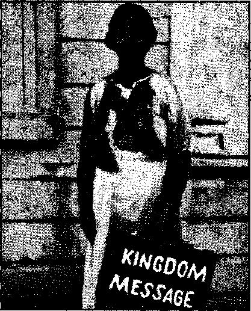
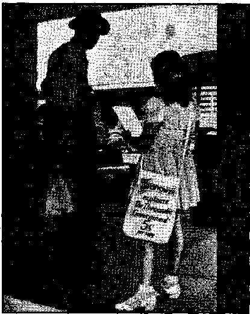
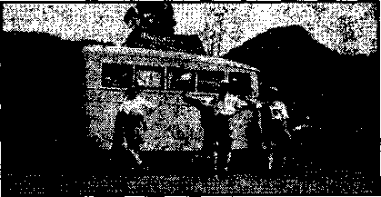

Contents Appetizers
Does America Need Roosevelt's Gestapo?
Pinchot's Letter to President Roosevelt
Willkie Might Be Catholic Today If—
British Comment
Counsel by J. F. Rutherford
Flag Displayed as Witnesses Convene
Jehovah’s witnesses at Dunkerque
WATCHTOWER BIBLE AND TRACT SOCIETY, INC.
lit Adams St., Brooklyn, N: Y„ U. S. A, *
Editor Clayton J. Woodworth
Business Manager Nathan H. Knorr
Five Cents a Copy ( .
fl a year in the United States
51.25 to Canada and all other countries
NOTICE TO SUBSCRIBERS
Remittances! For your own safety, remit by postal or express money order. When coin or currency 1# lost in the ordinary mails, there is no redress. Remittances from countries other than those named below may be made to the Brooklyn office, but Only by International postal money order.
Receipt of a new or renewal subscription will be acknowledged only when requested. Notice of Expiration is sent with the journal one month before subscription expires. Please renew promptly to avoid loss of copies. Send chsnpe of address direct to us rather than to the post office. Your request should reach us at least twb weeks before the date of issue with which It is to take effect. Send your old as well ns the new address. Copies will not he forwarded by the post office to your naw address unless extra postage is provided by you. Published also In Afrikaans, Bohemian, Danish, Dutch, Finnish. French, German, Greek, Hungarian, Japanese, Norwegian, Polish, Portuguese, Spanish, Swedish, Ukrainian; also special Australian edition in English.
OFFICES FOR OTHER COUNTRIES ,
England 34 Craven Terrace. London, W. 2
Canada 40 Irwin Avenue, Toronto 5, Ontario
Australia 7 Beresford Road, Strathfield, N.S.W. South Africa €23 Boston House, Cape Town
Entered as second-class matter at Brooklyn, N. Y., under the Act of March 3, 1379.
The psychiatrist was making some experiments with an eighth grade class,
“The United States is bounded on the north by Canada, on the east by the Atlantic Ocean, on the south by the Gulf of Mexico and Mexico, and on the west by the Pacific Ocean; and how old does that make mef” he said.
“Forty-four!” replied a lad.
“That’s correct,” said the psychiatrist. “How did you figure it out?”
“AVell, my brother is twenty-two,” said the boy, “and my mother says he’s half nuts.”
—Mentholatum.
An Unfinished Job
“You’ll excuse me,” said the kilted native of Aberdeen, “but were you the gentleman, who fetched my laddie out of the river yesterday !”
Replied the embarrassed rescuer; “As a matter of fact, I’m the man. But let’s say ' nothing about it.”
"Say nothing about it, indeed I Man, where’s his cap ?”—*Labor.
Fred: If baby swallowed a tadpole, mother, Would it kil| him?
Mother: I think it might, dear.
Fred: But it didn’t, mother.—Recorder.
The Eye Came Out
“Joe has a glass eye.”
"Did he tell you about it?”
"No, it just came out in the conversation.”
Teacher: If a farmer sold 1,470 bushels of corn at $1 a bushel, what would he get?
Pupil: An automobile.—Kellygram.
♦ The government has recently enacted a law requiring all male citizens between the ages of 21 and 35 to register and from the registered number an army for military training will be selected. In answer to all inquiries about registration our advice is;
Obey the law. Go and register at the time required.
That will also afford an opportunity in due time to give a witness.to the faith that is in you.
_ I
“And in His name shall the nations hope.”—Matthew 12:21, A. R.V.
Volume XXII Brooklyn, N. ¥♦, Wednesday, October 16, 1940 Number 550
JEHOVAH OF HOSTS is maneuvering all the forces of wickedness to their final doom at Armageddon. “Therefore wait ye for me, saith Jehovah, until the day that I rise up to the prey; for my determination is to gather the nations, that I may assemble the kingdoms, to pour upon them mine indignation, even all my fierce anger; for all the earth shall be devoured with the fire of my jealousy.”—-Zephaniah 3; 8, A.R.V. .
All the wise schemes of politicians and religionists shall fail. Their prayers shall not avail so much as a reed in a hurricane. As with Haman, the gallows on which they hope to hang Jehovah’s witnesses shall be their own place of execution. “He that sitteth in the heavens shall laugh ; the Lord shall have them in derision.” To Jesus, now the reigning King, He gives this command: “Thou shalt break them with a rod of iron; thou shalt dash them in pieces like a potter’s vessel.”-—Psalm 2:4, 9.
In the prophetic dramas of the' Bible, religion, politics and commerce are pictured as driving doiyn together upon Jehovah’s faithful people. (2 Chronicles 20:1) “For, lo, thine enemies make a tumult. They have said, Come, and Set us cut them off from bding a nation; that the name of Israel may be no more in remembrance.” (Psalm 83: 2, 4) Today these combined forces of the enemy are viciously striving to destroy Jehovah’s witnesses; an action foretold by • the assaults on ancient Israel. Jehovah’s witnesses have been killed in many places and their work stopped in all continental Europe. Canada, to the north, has, through their Catholic dictator, silenced the messengers of the Lord. In this crisis, has Roosevelt acted to safeguard the interests of freedom and protect the people of the God he says he prays to? Consider the evidence and judge for yourself as to whether America is any exception to the “nations that forget God”.—Psalm 9:17.
A brief allusion is here made to the circum-
stances which assisted Mr. Roosevelt to the presidency. It has previously been pointed out in Consolation that Roosevelt had entered upon a plan with the Vatican as early as 1933 to establish diplomatic relations with the pope as soon as “public opinion could be brought around to the idea”. Paeelli, now Pope Pius XII, Postmaster General Farley, and “Father” Coughlin were all parties to the arrangements. This design upon America was revealed by the New York Sun, March 8, 1934. This issue of the paper was later suppressed. The veracity of the report, however, was proved by the appointment of Myron C. Taylor, in 1939. No doubt 1934 was hot the earliest date of interview between the pope’s emissaries and those of the ambitious Franklin D, Roosevelt. In the November 1932 election Catholic leaders threw their forces heavily in favor of Roosevelt. Thus Roosevelt is deeply in the debt of Rome.
Repaying His Debt to Rome
Roosevelt’s subsequent actions lead to the conclusion that he made a concordat prior to his election; and that his establishment of diplomatic relations through Taylor, his formation of an American Gestapo, his packing of the Supreme Court, and his abandonment of Jehovah’s witnesses to Jesuitized police and Legionnaires, are but acts in fulfillment of this concordat or secret agreement with the Papacy. ■
It is said that a concordat can be made only with a dictator, as its terms must remain secret. It is hard to believe that the Congress of this nation wmuld ever consent to such a contract, which could be drawn only for the purpose of giving the pope authority in American affairs in exchange for certain privileges extended to the ruler making the contract. The people, either Protestant or Catholic, could not possibly be benefited. Gilbert 0. Nations, writing both in the New York Times and in the Masonic magazine, The New Age, makes this matter very clear. Very little prominence has been given this in the press, however, even though every Protestant council except one, representing 35,000,000 Protestants, have passed resolutions against relations with the Vatican, according to the Protestant Digest.
The tie between Roosevelt and the Papacy is like an umbilical cord. Catholic power put him in office, and unless he receives Catholic support in November he is unlikely to be elected. Judge Rutherford pointed out in his speech at Detroit that the Hierarchy has other plans for Roosevelt even if it appears that he cannot carry the vote. He warned that, if the balloting appeared doubtful, ‘Roosevelt might declare an emergency and seize the government. Tn this he would be aided by Catholic Action and all other fifth columnists. Just how well prepared the president is to do this might well appear from examination of the forward movement of his Gestapo. .
Roosevelt's Gestapo
The Nazi model the president has adopted as his own. He first spiked the U. S. Supreme Court so as to pull the teeth of this once defender of American liberties. Through the years of his office he has constantly wooed |nd petted the American Legion and Veterans of Foreign Wars as an instrument ready-made for illegal police work. He has formed this body into the American Gestapo. It is well knowm that the Roman Catholic Hierarchy has long dominated this organization, and consequently it was perfectly adapted for the job of attacking the common enemies of Roosevelt and the pope. In fact, they were eagerly awaiting the “Go” signal which was synchronous with the forward move of Catholic Action.
The Hour Arrives
The May and June drive against Jehovah’s witnesses was significant. It was like the first small riots and pogroms perpetrated upon the Jews in Germany. It was an indication that Catholic Action had begun its long-planned drive destined to destroy the four Jesuit hates: Jewry, Masonry, liberality, and democracy. Jehovah’s witnesses are merely considered 'the most active of the Protestant clan’. They are also thought to be defenseless, as the Hierarchy has no faith in the Lord. Hence the fight began upon the group that was particularly hated, not because of their numbers or might, but because their exposure of the Catholic racket was especially obnoxious to Paeelli. The outrageous action of the Legionnaires, together with priests and other Nazis, who led mobs to mistreat Jehovah’s witnesses, is well known to all.
What is not well known is that this was but a preliminary. The American Legion, allied with other Fascist elements, has been formed into an effective weapon to carry out unofficially what cannot be accomplished through law. This is purest Fascism. It preludes the death of all freedom. The attack on the witnesses is but one side of the advance on every front. Neither is this said to arouse others in defense of the Lord’s messengers; for they cannot expect and do not wish for any protection except from Jehovah. But that this is the Jesuit pattern cannot be doubted from the following:
Strike at Jews in Maine vandals smear varnish on eight STORES IN BATH, SLASH TIRES Special to The New York Times-
Bath, Me., Sept. 7—In the first demonstration of racial conflict recalled here varnish was smeared over the store fronts and windows of eight Jewish-owned establishments before dawn today. The police are checking on German sympathizers in their search for clues. '
Appearances indicate that the marking was done with an ordinary paint brush, but there were no identifying marks to indicate that the perpetrators were members of some organization opposed to Jews. There L ground for belief that persons Jiving elsewhere did the job, similar acts of vandalism having been committed in Lewiston a few weeks ago. '
Sam Prawer, a wholesale dealer in fruit and produce, who keeps a truck in front of his warehouse, reported 'that all the tires had been slashed.
[The New York Times, Sunday, Sept. 8, 1940]
This is the same sector in Maine where depredations on Jehovah’s witnesses took place. In like manner the conflagration of Jesuit hatred always begins. As yet all is unsuspected. The same paper contains a report that in Albany, N. Y., an assembly of “Catholics, Protestants, and Jews—offered united prayers today for world peace”. The Catholics always pursue the course of keeping the prospective victims unsuspecting. One of the most famous artists at this was Catherine de Medici, niece of the pope and perpetrator of the bloody Massacre of St. Bartholomew (in 1572), in which the French Protestants (Huguenots) were almost annihilated. Many of these were wedding guests of her daughter's. This massacre, by the way, was celebrated by ringing of Catholic church bells throughout Italy, just as Hitler’s triumphs are so acclaimed today.
None Stands in the Breach
In the past America has had many able defenders of its cherished liberties. Besides such God-fearing men as Washington and Jefferson, who were outstanding among the authors of our freedom, there was Lincoln, who died at the hands of a Catholic because of his opposition to the Hierarchy. (See Consolation No. 548, page 6.) Garfield was foully murdered by a Catholic. McKinley incurred the wrath of Rome because of the fight America made during his presidency to free Cuba, Puerto Rico, and the Philippines from the curse of Catholic Spain. In all there were three Republican presidents ‘liquidated’ by Catholic agents. President Roosevelt did not need to be slain. It was found that he could be bought with political support. Mr. Willkie would not say in public address (September .14) that Roosevelt telephoned Hitler and Mussolini during the notorious Munich conference to “sell Czechoslovakia down the river” if he did not have the proof of his affiliation with the Catholic totalitarians.
Perhaps a prominent Dutch historian will now realize how foolish he was in resigning from the Dutch Treat Club because a fellow author said: “I know’ who the head of the Fifth Column here is. It’s that fellow in the White House.” (New York Post, May 15,1940)
But some may still doubt that Roosevelt backed the mob action of the American Legion. Let the skeptical note the following vote of confidence after the Legion’s action had been condemned by the honest publishers of the country, including Anthony Biddle, solicitor-general :
Roosbvet.t Moves for Home Guard. Hyde Park, Aug. 6. The mobilizing of World War Veterans into home-defense regiments as replacements for National Guard units ... is contemplated by President Roosevelt . . . These veterans, he indicated, would be mobilized on a voluntary basis with the co-operation of the organizations to which most of them belonged . , . such as the American Legion and the Veterans of Foreign Wars.
When the President ehose to tell about the matter today he indicated that the home-defense plan had been fairly well formulated. [New York Times, August 7, 1940]
This occurred after the Legionnaires had led mobs on Jehovah’s witnesses from Maine to California and from Texas to the Canadian border. Everywhere there was outcry against such anarchistic assaults. The above statement of the president of the United States is nothing more than approval of lawbreaking, just as Hitler has honored many of the Gestapo who have murdered his enemies. The president wished it plainly to appear that the Legion was even dearer in his eyes than ever after their first putsch as a united gestapo. Others might find them over impetuous, but as for the chief executive this action was the kind of Fascism warming to his heart. It was Fascism both Roman and Catholic. It is too curious for coincidence that the attacks began two weeks before the decision on the flag salute came down against Jehovah’s witnesses. The L*. S. Supreme Court is now a New Deal organ. And the New’ Deal unofficial police were at work before the gun was fired. “Ue indicated that the home-defense plan had been fairly well formulated.” Only a Fascist could want the American home defended by a bunch of hoodlums taking orders from Rome!
Washington was recently made an archdiocese. Farther and farther down the road to Rome we go. But the appetite of the insatiable harlot (thus the Roman Catholic Hierarchy is described in Revelation the 17th chapter) will never be sated by such favors. Not until America is abject before her power as France now is will the pope, rub his hands and say “Good President Roosevelt”. The Scriptures declare that the Roman Catholic Hierarchy is destined to have such power for a time. The prophecies are bound to be fulfilled. But when this event takes place her desolation is nigh. According to many prophetic pictures she will be ‘burned with fire’ by her former allies, the political and commercial wings, particularly the radical element.
Meanwhile Roosevelt goes merrily on dining with Archbishop Spellman, having his picture made in company with priests and generally soliciting the glad hand from the Catholic Hierarchy. When one sets out to please the Hierarchy the process never ends. When the pope praised the Nazi hireling Petain as possessing an ideal government, lauding this traitor as “good Marshal Petain”, the world could well understand how much the Papacy hated democracies and rejoiced in despotism, no matter how much soaked in blood. Consequently we may judge how to get the pope’s real approbation. When this coun-
try is in the same condition as France, then, and only then, may we look for the badge of Papal approval. ,
Jehovah’s witnesses would not deter the forward move of these events one whit. It is not their wish to attempt to impede the Hierarchy’s march to power which is being maneuvered by the Lord. But the important thing is for the people to see that the prophecy is being fulfilled. Those who desire the Lord’s protection are warned that when these eondi- ■ tions occur it is time to seek the only possible protection, Jehovah’s kingdom. Religion or Fascism, whether of the European or of the American variety, will never save one single creature.—Elton Groves.
’ May 20, 1940.
The Hon. Franklin D. Roosevelt, The White House, Washington, D.C.
My dear Mr. President:
In view of the fact that an effort is being made to break down, presumably with your consent, the anti-third term tradition—that is to say, the tradition that no man shall be allowed to exercise the powers of the presidency for more than eight consecutive years —I take the liberty of writing you this letter.
1 For, occupied as you have been, and indeed overtaxed, by the duties and responsibilities of your office, it is possible that you have not taken time to consider the probable effect of the third term drive, not primarily on yourself or your party, hut on the country and the character and direction of American political thought. For, in the last analysis, it is the people’s thinking that will shape the country’s future.
Abraham Lincoln, in a little quoted passage in his first inaugural said:
“The Chief Magistrate derives all his authority from the people . . . ” who have “wisely given their public servants but little power for mischief; and have, with equal wisdom, provided for the return of that little to their hands at very short intervals.”
And perhaps he would have spoken more . strongly had be known that, in the next three-quarters of a century, the President’s authority would be so enlarged—-by statutes, by job and money patronage, and by an overgrown federal bureaucracy, extending its control to state and city polities in every section—that today any man who has served two terms in the White House, and wants a third, can override opposition and make himself his party’s candidate. ’
Mr. President, if you renominate yourself, for that is what it amounts to, your party
will have to fight, in the coming campaign, on three vital and essentially related issues. They are vital and they are related, because they, raise the question: What are the proper limits of the authority of the President of the United States ?
These issues will’ be (a) the immense powers you have already gained, and the far greater powers you tried to secure in 1937 and ’38, through a series of bills which, if passed, would have given you the full authority of a . dictator; (b) your attitude toward America’s involvement in the war; and (c) your desire to break down the anti-third term tradition, and become the first American to remain in the White House for twelve years in a row. .
I am not a Democrat. And I am not writing this letter out of any wish to see your administration avoid errors that might insure its defeat next fall. On the contrary, I believe it has been in too long and become too strong. And, though it did many needed and beneficial things in your first term, your second term has tragically failed as an instrument of recovery, progress and re-employment. It has left unsolved every serious national problem. And it is evident that a change is required.
But what seems to stand out as clear and important in the situation is this: Any party that goes before the people in a nation-wide effort to convince them that the President should be armed with the sort of powers that were provided in the bills referred to, will be doing a major dis-service. For it will be defending a legislative program which, had it not been defeated, would have assured a puppet Congress, a puppet Court, a puppet press, and a government-controlled economic system, to be steered, allowed to go ahead, or hauled back, like a toy boat sailing in a pond at the end of a string.
Later on I will raise the question whether this country should or should not enter the
European war. Obviously it ia a question on which everyone is entitled to. his own opinion. But, at this point, it may be said that, in your handling of foreign relations, you have gone far toward laying down the proposition that 4 you, instead of Congress, should have authority to make the choice between war and peace. More than that, while you have frequently declared your preference for peace, in a more or less perfunctory manner, you have followed up such declarations by making almost every argument that might justify our entry into the war.
No political party in this democracy can afford to defend the doctrine that the President shall decide the issue of war and peace, any more than any party can go to the people on the proposition involved in your third term drive, namely, that your presence in the White House is indefinitely indispensable. And, Mr. President, if the Democratic party does defend these propositions—and it will have to if you are its candidate—it will be turning American thinking away from Democracy, away from peace, and away from the basic ideas of life and government that have nourished and sustained our commonwealth for a century and a half.
I. Your 1937 and ’38 Bills
Space forbids a discussion of the expansion of presidential authority which you have actually accomplished from 1933 to the spring . of 1937. This was the period in which a subservient Congress, in the name of emergency, gave you practically every power you asked for over agriculture, industry, business, foreign relations, taxation and the spending of the public funds.
But I would like to refer, at some length, to the powers which were embodied in the White House Bills proposed by yourself and your advisors, and defeated in 1937 and ’38. For in these measures we have an authentic, unchallengeable record of your intentions on the subject of concentrating power in the President’s hands. Consequently, in order to make clear, in brief form, the purpose and meaning of these measures, I have gathered together some of their more significant provisions, and have re-drafted and condensed them into a single measure, using simple and untechnical language.
And here I would like to emphasize the fact that there is no provision or even implication in this condensed measure, which, for con-venienee, we will call the Presidential Powers Bill, that is not found in the bills they are condensed from. And I may add 'that, if you will show me any provision in my bill which, in substance, is not found in your bills, I will be glad to send you my check for $1,000.00, to be donated to any charity you may select.
A Bill
To authorise the President: to enlarge the powers of the Presidency in peace and war; to control Congress; regulate industry; censor the press and radio; guide constitutional decisions of the Supreme Court; and for other purposes.
Title I. Reorganization of the Executive Branch of the Government
Section 1, The President is hereby authorized (a) to change the name and functions of the office of President, or (b) to abolish that office and set up another in its place.
Section 2. The President is authorized (a) to change the name and functions of the Executive Departments, the Interstate Commerce Commission, the Federal Trade Commission, the Federal Reserve Board, the National Labor Relations Board, and all other agencies and offices in the Executive Branch of the government, or (b) to abolish them.
Section 3. The President is authorized to nullify and prevent the enforcement of laws passed by Congress, by abolishing any or all agencies set up by Congress to enforce its laws.
Title II. Control of Industry
Section 1. The President, acting through *a Board of five persons, appointed by and responsible to himself, is authorized to establish a standard minimum wage not to exceed $1,200 a year—except as hereinafter provided—and a work-week of whatever hours the Board may decide to be fair.
Section 2. (a) The President’s Board may at any time set aside the standard wage and fair work-week established in accordance with Seo- • tion 1, for any industry, class of industries, or individual concern; and fix whatever wages and hours it may see fit. (h) The President’s Board may thereafter change hours and wages as often as it may see fit. (e) The President’s Board may require any employer to establish, in addition to fair wages and hours, whatever other labor conditions it may see fit.
Section 3. The President’s Board may cancel agreements between employers and employees arrived at through collective bargaining, if and when it decides that the facilities for collective bargaining are ineffective.
Section 4. Violation of any provision of this section shall be punishable by a fine not to exceed $500.00, or imprisonment for not more than six months, or both. Each employment of a person in violation of this Title shall be considered a separate offense. (Example: A publisher or broadcaster employing 1000 persons in violation of this Act would be punishable by a fine not to exceed $500,000, or imprisonment not to exceed 500 years, or both.)
Title HI. Control of the Press and Radio
Section 1. The provisions in Title II, giving the President authority to change wages, hours, and other labor conditions, at discretion, shall apply to the newspaper and radio industries, to the end that the President shall be empowered to discriminate against or discipline any newspaper or broadcasting company whose policies do not coincide with those of his administration.
Section 2. Anyone who publishes and transports across state lines, or through the mails, any materia] known by such publisher to be false, shall, upon conviction, be barred from the use of the mails for six months, and shall be fined not less than $1000, and imprisoned for not more than two years.
Section 3, The question whether sueh material was false, and whether the publisher knew it to be so, shall be decided by an appropriate authority.
Title IV. Government Contracts
Section 1. The President, acting through the Secretary of Labor, is hereby authorized to blacklist, at his discretion, and render ineligible for government contracts for a period of three years, any contractor whom the National Labor Relations Board shall report (but need not prove) to have engaged in an unfair la.bor practice.
Title V. War Powers of the President
Section 1. Upon a declaration of war by the United States against any nation, large or small, the President is hereby authorized: (a) to fix, by proclamation, and to adjust, and readjust, at any time, upward or downward, at his discretion, the maximum price at which any article, or product, or any property, or right or interest in property may be bought, sold, leased, or contracted for, whether such articles, products, property, etc., shall relate to war or not; (b) to fix, by proclamation, and to adjust, and readjust, upward or downward, at discretion, the maximum wage, compensation, or contract price of all labor and services, whether such labor and services shall relate to war or not. '
Section 2. By virtue of the authority granted to the President in the foregoing section, to fix and change at will, and without limit, the maximum prices and compensations for articles, products, and services (which includes the price of newspapers, periodicals, print paper, et cetera, and the compensation for advertising, entertajnment, and other services) the President is empowered to censor the publishing and broadcasting industries, and, if need be, to make unprofitable any news-.paper or broadcasting company which refuses to follow the instructions of the White House.
Title VI. Reorganization of the Supreme Court
Whereas certain provisions of this or other Acts of Congress, enlarging the President’s powers over , Congress, business, agriculture, and other phases of American life, might be held unconstitutional by the Supreme Court of the United States, the President is hereby authorized to add to that Court six new justices of his own choosing.
I repeat that, incredible as it may seem, each and every power in the foregoing bill is taken from actual bills sponsored by ‘yourself or your advisors in the period referred to. And the fact that they did not shock the country, even more than was the case, was mainly due to two circumstances. In the first place, the bills were introduced at intervals, so that their force and meaning was never fully grasped by the people. Tn the second place, they were radically altered by congressional committees before they were given publicity.
For example, the power, provided in the condensed bill, to change the name and functions of the Presidency, or abolish that office and set up another in its place, is found in the typewritten, White House draft of the Reorganization Bill dated February 16, 1937, in Titles I and V, and also in the revised draft of February 22, but not in the drafts debated on the floor of Congress. Both of the original . drafts were made after consultation with you by men ehosen and paid by you for the purpose. *
Likewise, the highly coercive power to change and rechange, without limitation, wages, hours, and other labor conditions in the publishing, broadcasting, and other industries, was given you in the original Blaek-Connery Bill, introduced by Senator Hugo L. Black, now Supreme Court Justice, on May 24, 1937. And the same is true of the other powers granted you in the condensed bill. Talk about Economic Royalists' These bills would have established an economic, plus a political, royalism sueh as was never before contemplated in a free country.
Also, it should be noted that the bulk of these bills made their appearance under misleading declarations of purpose. The court packing bill was offered to the country as a more or less routine measure designed to lighten the labors of federal justices. The Black-Connery Bill, which would have set up an executive dictatorship over capital and labor, was introduced as a mere wages and hours measure. As I remember, you referred to it as a bill “to put a few dollars in a poor devil’s pay envelope at the end of the week”.
The Reorganization Bill sailed under the. colors of an efficiency measure, and was preceded by a message from the White House, stating categorically that it would not increase the President’s power. While the war powers bill was printed under the reassuring caption, “A Bill—To prevent profiteering in time of war and to equalize the burdens of war and thus provide for the national defense, and promote peace.”
Mr. President, your lost battalion of bills was a political and economic monstrosity. It was a reduction to legislative form of a dream of unrestrained executive ambition, a dream which, Unfortunately, was more than a dream, and which still persists, as shown by the unceasing efforts of your administration to strip Congress of its constitutional functions, and vest in the Executive more and more power over the economic and political organization of the country. It is evident that, had these bills been enacted, they would have put this country on the path, not of creeping socialism, but of galloping collectivism and dictatorship. And it seems equally evident that they were drafted by men who, having lost interest in the American way of doing things, wefe going on the principle that the only good democracy is dead democracy, and that the Constitution is a fine thing to praise, but a better thing to maim or destroy.
II. Foreign Relations
So much for the issue that would be raised, should you seek a third term, by your program of 1937 and ’38, and your continuing desire to acquire authority at the expense of the legislative and judicial branches of the government. Now let us turn, for a moment, to foreign relations; for here again it would seem that no party would be justified in asking the American electorate to accept certain propositions which yctu have laid down. '
In. the opinion of many experts of good standing, the worst thing that could happen to England and France would be for the United States to become physically involved in the war. For this would necessarily divert our natural and industrial resources from the Allies. Our entry would mean that our productive energy would be required to strengthen our sadly lacking and obsolete military establishment.
Unfortunately, though the New Deal has seen the European war coming since 1937, it has been as impractical and inefficient in military matters as in the matter of recovery. It has spent seven billions. It has talked a great deal about modernizing our system of defense, just as it has talked about balancing the budget, restoring employment and farm incomes, and carrying on a large housing program. But it has done exceedingly little. And now, at the end of seven years, with wur sweeping the world, we have no army to speak of, a very small air force, inadequate coast defenses, practically no anti-aircraft guns, and a paralyzing public debt which will make adequate military preparations possible only at the cost of a serious sacrifice in the standard of living.
For seven years, under your leadership and that of the Brain Trust, your administration has been carrying on an economic war against depression. And the results have not been gratifying; for there has been little co-ordination or effective administration, less foresight and consistent planning, and no steady application of horse sense. And the question arises: Under the same kind of leadership could a military war be effectively waged? No, Mr. President, if we want to help the Allies—and nine Americans out of ten do—common sense demands that this country shall stay at peace; that it shall keep its shirt on and not be rushed across the ocean into ill-considered adventures in Europe or Asia, where we cannot 'Tight effectively in any case.
And yet, you have moved steadily to a position far beyond that authorized by Congress and approved by the American people—namely, that of aiding the Allies by making our industrial output available to them. Indeed, your administration has advanced to a point where, with one foot in the war and the other in the air, it should be comparatively easy for it to throw this country irrevocably into the conflict.
A little over a year ago, your personal representative in Paris made an address, in the presence of high French officials, which, if less than a promise, was more than a hint that America would fight for France, should war occur. Less than two months later, you yourself publicly recorded your belief that, in ease of war, America’s “physical involvement” would become a “virtual certainty”.
In the recently published American White Paper—which must be taken as authorized since you have publicly recommended it, and it was compiled with the help of at least one member of your official family, and with access to official files—it is stated that, in conversations with the Attorney General and the Secretary and Under-See ret ary of State, you have taken the stand that, while you will not send an expeditionary force across the ocean, you might be willing to send our navy and air forces.
A week ago, in your speech before the eighth American Scientific Congress, you again expressed an intention to keep the country at peace. Nevertheless, almost in the same breath, you all but declared war on Germany. And dramatically, in an appeal to fear, you restated the arguments for armed intervention. Last Monday, Secretary Hull, in an address of mysterious meaning, before the American Society of International Law, seemed to say, but did not quite say, that we ought to intervene in an effort “to keep alive in the world the principle of order under law”.
What do such statements mean, Mr. President? Why this mystery? Why this facility in never quite saying it? I have been convinced for a long time that you sincerely believe that this country ought to enter the war, and that, if you are' re-elected, you will move rapidly in that direction. But, in any case, your statements indicate a misconception of the scope and functions of the Presidency aiid, one iaay add, an overlooking of the fact that the decision between war and peace must, under our Constitution, be made not by yourself but by Congress, in the light of future circumstances, if and when the occasion arises.
In short, your position seems prematurely taken and more prematurely spoken, and inconsistent with your expressed resolve to prevent a blackout of peace. And, what is more, it comes near to laying down the proposition that, when the people elect a President, they give, in advance, to a single individual, a mandate to commit one hundred and thirty million people to war, and al] that war means.
Again, an analysis of the utterances of various administration leaders—Secretary Ickes, I Senator Pittman, Under-Secretary Welles, et cetera—-since the third term drive began in 1937, reveals an intemperate and inflammatory quality better suited to create international friction and hatred, and a war psychology in our country, than to keep America in such a relation to Europe that, conceivably, it might act as a mediator to bring the present unspeakable disaster to a close.
One does not question the sincerity of these and others among.your advisors. In fact it is their sincerity that makes them dangerous. But it is possible that their judgment may have been influenced by the consideration that, only through an expectancy of war, or war itself, can the feeling against the third term be overcome, and they themselves be assured the opportunity to continue their usefulness to the country in an official capacity.
Nothing can exceed the horror with which public opinion in the United States regards the savage and inhuman course of Adolf Hitler and his government. Yet, what is to be gained by continually shaking one’s fist at him across the Atlantic Ocean, or by the endless stream of threats and invective that flows eastward out of Washington? Certainly it has had no tendency either to help the Allies or to cheek or embarrass Hitler. In Germany it has probably strengthened Hitler’s hold on his people. In America it has undoubtedly excited the public, clouded its judgment, and in*-creased the likelihood of our being drawn into war. ■
Despite the so-called'American liberals who have found pleasure and profit in running down the United States, we have a great country. On the whole, it is a generous and enlightened country, and a tolerant one. It has made mistakes, and will make others, plenty of them. But, in the long account, it has developed a higher degree of freedom and opportunity than has been found in other nations. And this should not be sacrificed in a rash and barren excursion into a war which would help no one, a war for which we are unprepared, a war that might destroy millions of our young people and, at the same time, tear down what we have built in seven generations of effort.
The American people, Mr. President, have done a good deal for themselves in a hundred and fifty years, which, after all, is but a tick of time in the world’s history. Likewise, they have done- a good deal for humanity. And the possibilities of the future are larger and finer than the accomplishments of the past. And of one thing they may be certain in this time of uncertainty. They should continue on the path of peace and democracy which they have followed, faithfully in the main, and kneel at their own and no other altars.
Sincerely yours,
[signed] Amos Pinchot
♦ Unde Sam is trying desperately to get into the World War, and, under the able political maneuvering of the gentleman who sent his personal representative to the Vatican, will almost surely succeed, and then, in the same degree as Hitler, and ..Mussolini, and Franco, he will be monarch of all he surveys, subject only to the will of Paeelli. Early in June America released 50 Navy planes to the Allies, and a few days later 10 submarine chasers and 10 motor torpedo boats. That is the way to do it, Franklin. Also, and self-evidently, when • Hitler and his Fifth Column get ready to take over America there will be nothing to prevent a completely successful putsch. "Reverend Father” Coughlin's Christian Front will see to that,
♦ In President Roosevelt’s address at Charlottesville he said of Mussolini, "On this 10th day of June, 1940, the hand that held the dagger has struck it into the back of its neighbor,” It was a clever way of putting a bitter truth across so that all could know what he meant. Mussolini merits the contempt back of the remark.
♦ No nation is truly at peace if it lives under the shadow of coercion or invasion. Peace reigns among us (American nations) today because we have agreed, as neighbors should, to mind our own businesses. ... We did not stamp out nations, capture governments, or uproot innocent people from the homes they had built. We did not invent absurd doctrines of race supremacy, or claim dictatorship through universal revolution. The inter-American order was not built by hatred and terror. Old dreams of universal empire are again rampant. We hear of races which claim the right of mastery. We learn of groups which insist they have the right to impose their way of life on other nations.—From President Roosevelt's address to the Pan American Union.
July 12, 1940
THE CATHOLIC UNIVERSE BULLETIN
ELWOOD, Ind.—Had Herman Willkie not married outside of the Church, his son Wendell, the Republican presidential nominee, might be a Catholic today, Herman Willkie was born of Catholic parents in Germany and bar tiled a Catholic before being brought to this country as a child. Although raised a practical Catholic, he left the Church at the time of his marriage to Henrietta Frich of Wabash, Ind., a Lutheran girl who also had come from Germany.
HAD PRIEST AT DEATH
However, a Catholic priest. Monsignor B, Biegel, was with the G. O. F. nominee’s father when he died.
Frank Willkie, a brother of Herman and an uncle of Wendell, is a Catholic and attends Mass daily at St. Joseph Church here,
This information is verified by the Most Rev. John F. Noll, Bishop of Fort Wayne, Ind., in his paper.
Wendell L. Willkie
Our Sunday Visitor, where he is quoted as saying that he recently had an Interview "with an uncle of Wendell Willkie, the only surviving brother of Wendell’s father, who is a daily communicant at St. Joseph Church, Elwood, Ind.
RELATIVES IN CONVENT
Bishop Noll says Wendell’s father "married Henrietta Frich, a Wabash, Ind., girl before a Methodist' clergyman," and “did not bring up his children Catholic." The Bishop adds the children of the surviving brother and sisters of Wendell’S' father are Catholics.
“In fact," he says, “one of his aunts has two daughters in the con-, vent, one a Sister of the St. Agnes community with headquarters at Fond du Lac, Wis., and the other a Sister belonging to the Sisters of St. Francis of Joliet, Ill."
While they lived here Mr. and Mrs. Wendell Willkie belonged to the Methodist Church. They now belong to the Episcopalian Church.
Both Roosevelt and Willkie are immensely wealthy; both are of Catholic sympathies and connections; totalitarian rule by one of these men is a certainty, it would seem.
OCTOBER 18, 1940 ’
British Comment
By J. H emery (London)
।
Britain Under Bombardment
• It is now nearly a year since Britain declared it was at war with Germany. Immediately after Prime Minister Chamberlain made the momentous fact known there came the wailing of a siren, warning of enemy aircraft, but it is only in the eleventh month that Germany has launched in force of numbers its attack on Britain. On some days, it is said, as many as 600 to 800 bombers and their accompanying fighters have started and have got to or approached the coast. Great battles in the air there were—it is a terrible thing to think of fighting at 20,000 to even 30,000 feet, above the clouds or in the clear blue of the sky—as the attackers were met by the defense planes. Many hundreds of the German planes were shot down: it is reported that up to the time of this writing more than 1,100 have been shot down since these attacks began; but it is impossible to keep the air “coast” of Britain as the navy7 has kept the sea eoast, and many bombers have got inland and have wrought destruction and have killed and wounded many of the people.
Aftei' a few days of comparative quiet, bombing has been resumed, and now appar-, ently without attempt at discrimination between military objectives and the homes of the people. Whether this air attacking is part of the announced scheme for the invasion and re-* duetion of Britain to German rule, or whether there is another purpose in it, no one knows, but its effect is to make the people realize that there is no definite “front” fighting line in this war, and that every town and every village is in the front line of battle. Sometimes bombs are dropped before the people have been warned by the sirens, and sometimes without any warning at all, and in the ease of the shelling of the Kent coast by guns on the French coast in the narrowest part of the English Channel shells arrive even before their own swishing sound is heard.
Neither the friends nor the enemies of Britain throughout the world can do other than wonder what the reaction of the people is to this complete change in the nation’s situation: the friends of this land where personal liberty has been rooted in its institutions, and is now threatened, and for which both for itself and for others the nation professes to have taken up arms, watch with sympathetic interest; the enemies watch to see what advantage may be gained for themselves and their eoconspirators in the evil abroad among the nations. It can be plainly stated that there is no sign of panic because of the general situation, nor even when the sounding of the sirens and of the air defense guns tells of danger which may be immediately near. To the contrary7 it can be said that the purpose of the people in backing up the Government’s decision in the war is stiffened. They are calm and the life and business of the country goes on as unaffectedly as is possible. And all this is of more than passing interest to those who know from the Scriptures that this war is include'd in those to which Jesus made reference when, in His great prophecy spoken to His disciples just-before the religionists got Him murdered, He said of the days of His return to establish His kingdom in the earth, “And ye shall hear of wars, and rumours of wars.” (Matthew 24:6) Whatever vitally affects the nation of Britain must be of serious interest to Jehovah’s witnesses, who yet have liberty to witness for God and for Christ Jesus, and to tell of the kingdom of God.
Questioning Religion
• The altogether unexpected .events of the past few months which have caused Britain to become an island fortress, and to become in war the sole challenger of Nazi aggression against the freedom of men, have made great numbers do some thinking for themselves instead of trusting to their clergy and the preachers. What Judge Rutherford has said in public addresses, and in the books which Jehovah’s witnesses take to the people for their ehanee of learning what the Bible says, is brought to mind as the puzzle of the unusual situation is forced on them by' the daily' happenings. Thousands are, reading with eagerness to find an answer to their Wonderings; for the ideas about Britain's special place of favor with God which held in Queen Victoria’s days has still some place among religionists. And the Roman Catholics, whose Hierarchy has chosen their idol Mary as the special pro-tectoress of England, have amongst them
many who question whether they have been the dupes of their priests.
• The establishment of the church as an integral feature of the constitution of England necessitated the building of a church in every parish in the land, and its equipment of clergy to conduct its ordained service, according to the prayer book—the parson’s law, from which he may not deviate. It has been the boast of the church that this State law guaranteed that there would be at least one gentleman in each village in England. Of course, many of these parsons have been gentlemen; many have not. In the days when John Wesley began to travel through the land the clergy of England—and the religion they professed to keep up—were in a bad way. Wesley gave both them and the country a shake-up, and incidentally suffered much at the hands of mobs instigated by the parsons. So long as the church of England remains as established by the State there must be a parson in each parish. But the population has greatly increased, and churches have multiplied, and consequently the numbers of the clergy are greatly increased. In the towns and cities the influence of the clergy is much minimized by the different conditions of life; but in the villages and suburban districts the parsons watch over their preserves with a keen eye lest any of their sheep should seek other pasturage than the meager cropping the parsons provide.
Of late a number of these “clergy” have used their church magazines to speak evil of the witness to the truth of the Scriptures which Jehovah’s witnesses, obeying the command of the Lord, carry to the homes of the people. They hate that the people should be informed of the truth, and they show that they have the same spirit as their prototypes, the scribes.and Pharisees, who were so mad that Jesus taught the people as to take means of killing Him. But as yet the Chur eh of England, as an organization, has not attempted to interfere with the liberties of its members, nor warned them against reading for themselves. The Roman Catholic church, alive to its weakness in this matter, of course, forbids its member's and adherents to read any book r or paper dealing with the Scriptures except such as has passed the censor of the Hierarchy and got its proof stamp. The Presbyterian church of Scotland is concerned about its members and its own position, and has enOCTOBER 16, 1940 .
tered on a campaign of slanderous statements about the work of Jehovah’s witnesses. The Church of England is more assured of its position as part of the State, and its history shows it has a great measure of tolerance. The tendency throughout the world at the present time is towards repression, and as the days for religion darken undoubtedly all the churches will get into line in these things and. try to repress freedom of thought as well as of action.
• In Britain the Hierarchy is keeping the interests of the Roman Catholic church well to the front these days. It has provided a cross for every loyal church soldier to wear under his tunic, and the English cardinal Hensley has blessed the lot. The wearing will keep the church in daily remembrance, at least probably so, but there is no reason for thinking it will have any other effect—except indeed that of misleading the wearer into belief in the efficacy of his church and his “fathers”.
A more definite effort of the Hierarchy is the formation of a new organization to be called the “Sword of the Spirit”, aiming at unifying all Roman Catholic action and -war effort. Probably the underlying purpose is to entice other religious organizations into some form of union with them; for it is said the “movement seeks to identify not only the enemy with ‘evil things’ but the cause of the. Allies with the Christian cause”. The Hierarchy is fearful lest Britain should make any kind of alliance with Russia—“Godless Russia,” as they put it. The cardinal is made president of this new organization, and in his message of agreement he brands the Nazis as “a pagan clique of upstarts”. One purpose of this group of Catholics who are said to have proposed the idea of the new organization— but which may be considered as arising out of the inner councils of the Hierarchy, is to keep Catholic Action alive among the troops, that is, to have the loyal Catholics among the troops active workers for the increase of the Roman Catholic church among their fellows. The Catholic Herald, in commenting on the’ recent broadcast speech by Lord Halifax, said, “We know that Britain, moved by the spirit which produced Lord Halifax’s speech, united in defense of Christianity, informed by Catholic support and influence-—and by the grace of God--will triumph over her enemies, be they German Nazism or Russian Communism or the evil genius of both which is atheism. The Roman Catholies in the British army are now encouraged to fight as the champions of Christianity against paganism, and so to be encouraged to fight for their church and their country. In Rome the Hierarchy which governs the whole system takes the wider view, and is ready to take out of the world mess that which will suit its unfailing purpose of getting hold of the controlling power in the whole earth, to which through the centuries it has put forward its claim,
Roman Catholics in Parliament
• These are not numerous. Recently a new member was elected to succeed one who had resigned, and a Roman Catholic newspaper remarking on this says, “Catholics in the House of Commons now number 21,"
Blessing Cars
• On the eve of “Saint Christopher’s feast" “Father" O’Leary “blessed" a number of motorcars and motorcycles. He sprinkled them with “holy water", and prayed that “God" would bid His angels protect each blessed car. Some non-Catholic owners joined in to get what chance was going. The Roman Catholic bishop of Nottingham, “Reverend" McNulty, has a new reason why “St. Christopher" has been chosen as the patron of motorists. He said he had heard that it was because the “saint” was for many years in charge of a Ford. The bishop has a sense of fun, and very probably his own belief in the care of Christopher is not so great as in careful driving.
The Gaelic American
♦ The Gaelic American cheerfully proclaims as its motto, “Never forget that England’s difficulty is Ireland’s opportunity.” This backstabbing policy is carried out by Sean Russell, chief of staff of the Irish Republican Army, apd Joseph McGarrity, Philadelphia leader of the Clan-na-Gael, who were hobnobbing with the Nazis in Hamburg when the British army was facing what looked like annihilation on the narrow strip of coast around Dunkerque,
♦ The other night there was a little private meeting of about twenty or thirty young men and women who were arguing about this question, and almost without exception saying that “liberty” and “individual freedom" were bogus, didn’t exist in our society, meant nothing anyhow, and that really there was very little difference between the position of a workingman in England and the position of a workingman in Germany. The conversation went on from eight till nearly midnight, and just before midnight they turned to a German refugee who happened to be present, and said: “What do you think?” He made a very simple reply. He took off his coat, and then his waist7 coat, and then his shirt, and showed them his back scarred from top to bottom with horrible wounds. “That’s the difference," he said. “That happened to me in a German concentration eamp because I advocated socialism at a private house at which a Gestapo spy was present. In Germany every one of you would be in a concentration camp tomorrow, and most of you would have a back like mine.”—The Book Club (London magazine),
♦ It seems odd to speak of a Parliamentary dictatorship, but that is the nature of the dictatorship in Britain, It was a Parliament, not a group of gangsters, that voluntarily gave the British Government its authority to conscript every person, every piece of property and every penny in the realm, and it was the leader of the Labor party himself who introduced the bill. In 163 minutes Britain gave up rights which it had enjoyed for 1,000 years. Persons in any oeeupation may be shifted to any other oeeupation, or to any other locality; factories may be conscripted, closed or destroyed ; banks controlled ; profits abolished ; furniture and automobiles requisitioned, including private stocks thereof that are held in warehouses.
’ ♦ Baek from Flanders, British soldiers told of hand-to-hand fighting with German soldiers in front of them and turning to see dozens of parachutists, dressed as women and carrying machine guns which they used on everyone in sight. They told of German troops coming in wave after wave to certain death, with their bodies piled up and used as sandbags behind whieh machine guns were established. A wounded German soldier was quoted as saying, “What can we do? We obey or die. We
* were brought up to this since we were ehil- • dren.” Such is the totalitarian Pacelli-Hitler setup by which the Devil and his demons are determined to prolong their control of the race, or ruin them in the attempt.
Mayhem in Nebraska
♦ Encouraged by reason of the open failure and refusal of public officials to give any protection to Jehovah’s witnesses in Nebraska from mobs and violence, recently in a Nebraska town two wicked and demonized men went to the home of one of Jehovah’s witnesses and represented themselves to be Jehovah’s witnesses from another town and stated that they desired to talk to the witness. When he stepped out of the door they violently seized him, dragged him away from his home and transported him to a grove of trees and there, with a third fellow of their gang, forcibly performed an operation of cruelty upon him by taking out one of his testicles, otherwise known as eastration. When through, they defiantly yelled at the agonized witness, “There, that will hold you for a while.” This should be a warning to all of the Lord’s people to be careful, especially at night, when approached by strangers, not to let such persons inveigle them into a place of danger on their porches or elsewhere.
This is the second warning on this subject., See the first one, “To All Kingdom Publishers,” in Consolation No. 549, page 31. These warnings from God’s organization should be heeded, on the human and divine grounds set forth in Proverbs 19; 25, 26: “Smite a seorner, and the simple will beware; and reprove one that hath understanding, and he will understand knowledge. lie that wasteth his father, and chaseth away his mother, is a son that causetb shame, and bringeth reproach.” Jehovah’s sons need guidance and help in this evil day, and that guidance comes through the Word of God and IIis own organizationfather and mother of the New Government.
If necessary, in the faithful performance of your covenant vows, to be alone at night in this evil time, then rest content in the Lord. Bo His will and abide by the result, regardless of what may occur, and you will be blessed and your eternal interests protected. But do not henceforth take unnecessary risks, especially at night, and when alone. The Lord’s advice for witnesses to travel in pairs is good adviee, especially at night, in dangerous times like these, and in sections where Crime is rampant and loud-mouthed professors of patriotism are insulting and defiling everything for which America stands.
Moving a Little Too Fast
♦ At Aberdeen, South Dakota, a. radio operator for the civil aeronautics authority who newly came to town, but with a nice salary of around $2,000 a year, received a notice from a deputy sheriff reading as follows:
As a person who is, or is likely to become, a public charge, you are notified that you are not entitled to acquire legal settlement iii Brown county and you are hereby warned to depart therefrom.
Now it may be, for reasons of its own, that Brown county, South Dakota, is averse to having radio operators within its confines, but a more likely reason is that it does not want any more citizens at all. That being the case, a deputy sheriff should be stationed in every maternity ward to serve legal notice on newcomers that they are not wanted. Also, no doctor should be permitted to receive a hurry-up call in the middle of the night without $ deputy sheriff of Brown county going along to make sure that storks do not ignore county lines. ’
♦ In Germany the average hourly wage rate is 24.5 cents and the average annual income of the laborer is $718. In Italy the hourly wage rate is only 12.69 cents and the average annual income is but $239, In Russia the hourly wage rate stands almost exactly midway between that of Germany and that of Italy, at 18.87 cents, the average worker’s annual income amounting to $552. The hourly wage rate for the American industrial worker is 61.6 cents, and his average annual income is $1,275.
Facts wouldn’t indicate that dictators do much to raise the status of the laboring man.
—Waterloo (Iowa) Daily Courier.
♦ Common sense would seem to be sufficient guide for most people to see that compelling children to salute the flag every morning as the price of getting an education is a very silly as well as an undemocratic procedure. Common sense is of little avail simply because people do not seem to realize that a child does not learn the principles of liberty and freedom of conscience for which the flag is supposed to stand by being coerced into going through meaningless words and motions.
—St. Paul Pioneer Press,
♦ Milwaukee has one of those peculiar phenomena, a district attorney that decides what laws he will enforce and against whom. Wisconsin has a law against gambling, and under it bingo is illegal. It is also illegal under the Wisconsin constitution. But the district attorney, Herbert J. Steffes, says that he will proceed against the bingo racket according to his own discretion. In other words, as'saith the Milwaukee Journal:
It will seem to many that Mr. Steffes has highly exalted notions of his discretionary rights and extremely narrow views as to his duty under the law and the decisions of the courts.
The trouble with Mr. Steffes is that he is afraid of the horse-collar gentry that are operating the bingo racket. He lacks the backbone to be a public official of a well-ordered comfort station.
♦ The Hormel Packing Company, Austin, Minnesota, has 2,373 of its 4,000 employees working on annual salaries, instead of by the 'hour basis, and estimates a 10- to 20-pereent increase in efficiency in workers. The employees’ duties are budgeted to total 40 hours a week; and when the work is done they go home for the day. The average monthly wage is $125. Mr. Hormel states that the annual Wage plan is so popular with his employees that if he tried to return to the hourly wage basis he would have his plant tied up with a strike. Employees who are to be laid off are given a year’s notice. The plan works. Why shouldn’t it?
♦ After twenty years the Board of Regents of the University of Minnesota apologized for its error in dismissing Prof. William A. Schaper because he opposed entrance of the United States into the World War, and voted him a $5,000 consideration and made him a professor emeritus. Prof. Schaper will remain in Oklahoma, where he is now head of the department of finance in the University of Oklahoma.
♦ Lice killed millions of grasshoppers in Nebraska; and though the natives are not sure yet if it is good news or bad news (until they know whether or not these lice will attack plant life), they are sure it is news.
♦ The constitution ‘ of Nebraska forbids the state to run in debt, and hence it is the one state in the United States that pays no interest and pays for everything as it goes. The state capitol building cost $10,000,000 and is paid for. The state has 2,500 miles of paved highway and 6,000 miles of good gravel highway, and every mile is paid for in full. Officials’ salaries are small. The state grows upward of 400,000,000 bushels of corn and 50,000,000 bushels of wheat annually, and the average, farm income is the largest in the United States.
♦ At Mankato, Minnesota, two little folks, a girl of 8 and a boy of 7, who had no home, managed to go to school for an entire year and were described by their teachers as fairly bright pupils. To get into the school they gave the address of a house in front of which they had once slept in an automobile. In coldest weather they slept in hotel lobbies. They made their toilet in washrooms and picked up food where they could find it. Their parents made a little money from time to time doing odd jobs, and kept track of the poor little things.
♦ Great excitement at Wausau, Wisconsin. A four-legged animal called a horse, at one time found in considerable numbers on this continent, was found and was actually hitched up to drive Mayor La Guardia of Newr York to the convention of the Wisconsin League of Municipalities. After the convention the mayor took a plane back to New York so as to be at his desk the next morning.
♦ Near Stillwater, Minnesota, a woman farmer kept 22 dogs in her house. In her absence they pitched upon a 59-year-old farmhand, inflicting more than 300 wounds. She returned and drove the dogs off. The man was sent to a hospital with half an ear bitten off and deep gashes on head, face, hands, arms and legs. The woman is not safe to be at large.
♦ Walcott, Iowa, population 500, founded by persons who believe in worshiping God in their own homes, has never had a church building, has no public debt, no persons on relief, and no vacant houses.
ECENTLY certain days have been officially announced and set aside by political rulers and religious leaders for the people of the nations to pray for world peace. Have such prayers, especially if being sincerely offered, any chance of being heard and answered by the Almighty God?
The Almighty, to whom “the nations are as a drop of a bucket”, does not alter His purposes at the instance or prayers of men. Jehovah, whose name means His purpose concerning His creatures, declares that His time has come for His Theocratic Government and for Christ Jesus to rule and to put down the enemy and therefore the enemy must be destroyed and his organization pass away for ever. Jehovah in His own good way will then establish the world in righteousness, that it never again can be moved. (Psalm 96:10) Therefore, those who have a knowledge apd understanding of the divine Word know that this old world, which is Satan’s, cannot be recovered, but that within a very short time the Lord will completely destroy Satan’s organization and his rule, in order to make way for the righteous rule of His kingdom through which all the obedient ones of the families of the earth shall be blessed.—Refer to Revelation 11:17,18; 19:10-20; Genesis 22:16-18; Galatians 3:16-29.
The public press announces a nation-wide movement begun by the united efforts of the various religious organizations, and political and financial leaders, to get the people back to the churches to help pull the world out of its present dilemma. Their slogan is: “God the Light of the world; follow the Light back to the church.” They do not say, howrever, whether they mean the true God or the mimic god. The Scriptures definitely show that the true God is not in the religious organizations called “churches” today; therefore this movement must be at the instance of Jehovah’s enemy §atan for the purpose of deceiving the people. In the past the people have received no light on the Scriptures from the “churches”, OCTOBER IS, 1940 and they will receive none by going baek to the “churches”. The same ones that have organized such nation-wide movement are the ones that have bitterly opposed the proclamation of the truth of and concerning the Theo. cratic Government; and for that reason alone their movement is doomed to complete failure. Instead of getting the people' back to the “churches”, where they are asked to give up their hard-earned money and receive only husks, there should be a nation-wide movement to aid the people to gain a knowledge and understanding of Jehovah’s purpose as set forth in the Scriptures.
Jehovah’s announced purpose is that in this day He will cause all to know that He is the true God and that the only hope of the world is His kingdom under Christ, which is now-begun. To the nations Jehovah now- says: . “Behold my servant, whom I have chosen; my beloved, in whom my soul is well pleased: I will put my spirit upon him, and he shall shew judgment to the [nations], . . . And in his name shall the [nations] trust.” (Matthew 12:18-21) If the men of such nation-wide movement had a knowledge and understanding of Jehovah’s Word they would tell the people that the great crisis is here, that the greatest tribulation of all time is just ahead, in which all the nations will go down, and that the only way of escape is by and through Jehovah’s kingdom under Christ. A knowledge and understanding honestly used now would be of great value to them and to the people. A knowledge and understanding of this prophecy'just now would do more to help the people than anything else. Failure of teachers to help men get such knowledge and understanding works a hardship on the people and puts them in a bad way; as it is written: “Where there is no vision [understanding], the people perish ; but he that keepeth the law [of God], happy is he.”—Proverbs 29:18.
Who is the chief opposer'of the truth, and the one who keeps the people in ignorance thereof? The Scriptures answer that Satan the Devil, the prince of darkness, the god or invisible ruler of this world, he it is that blinds the people to the truth lest the light of truth from God’s Word through Christ Jesus should shine unto them. (2 Corinthians 4: 2-6) Be assured of the fact that if you find the leaders in any organization or institution are opposing the spread or proclamation of the message of truth of and concerning Jehovah’s Theocratic Government under Christ as the
only means of blessing mankind, all such opposers are without knowledge and understanding of God’s purposes, hence you cannot afford to follow them. Any teachers of any organization that would hinder the people from studying and understanding the Bible with respect' to The Theocracy are the agents of Satan whether they know it or not.
The Scriptures emphatically state that all opposition to such work of enlightening mankind proceeds from Satan, the prince of darkness. Many will ask, Then why do the great religious leaders and the politicians and their supporters oppose this witness work in the name of God and His kingdom and persecute the witnesses? Is it because they willingly desire to serve the Devil ? The Scriptural answer is, Because such opposers are without knowledge and understanding of Jehovah’s Word. If these opposers had a knowledge and understanding of the Bible, which shows that the only hope for the nations of earth is the kingdom of God under Christ, and that in the very near future God will destroy Satan’s organization and put His Theocratic Government of righteousness in full control, surely they would not deliberately fight against God. It is easy to be seen, therefore, that they lack essential knowledge and understanding.
Why would men who claim to believe in God oppose and persecute Jehovah’s witnesses who are really engaged in carrying the truth to the people to comfort them in this time of distress and perplexity? The answer is, Because such opposers are without knowledge and understanding of God’s Word. When the knowledge of God’s purpose is brought to the attention of such opposers, then their responsibility is greatly increased. If they had never known any better they would not have been so reprehensible ; but, having been informed in the light of events that are in fulfillment of prophecy, they are now without excuse. To His faithful followers, and concerning those who oppose His witnesses, Jesus says: “Remember the word that I said unto you, The servant is not greater than his lord. If they have persecuted me, they will also persecute you; if they have kept my saying, they will keep yours also. But all these things will they do unto you for my name’s sake, because they know not him that sent me. If I had not come and spoken unto them, they had not had sin; but now they have no eloke for their sin.” (John 15:20-22) Clergymen and public officials have now had fair warning, and they must assume
the responsibility before God. Knowledge and understanding would 'be of inestimable value to them if they would learn the wray of wisdom. To such the scripture is addressed (James 4:3,4): “Ye ask [in prayers], and receive not, because ye ask amiss, that ye may consume it upon your lusts. . . . Know ye not that the friendship of the world is enmity with God? whosoever therefore will be a friend of the world is the enemy of God.”
The only way to life and endless happiness is Jehovah’s way, and that way is by and through Christ Jesus and His Theocratic Government. Suppose that the world might be recovered by present human efforts and that the wheels of commerce might turn everywhere and all the people be put in even a better condition than they were before the war. Even such temporal blessings could be only temporary to the present generation. Only God’s kingdom through Christ can now bring the things that men desire and need. Jesus emphasized that point when He said (Matthew 16: 26): ‘For what is a man profited if he shall gain the whole world and lose his life?’ No man or organization of men can give life to any man. ‘Life is a gift of God through Jesus Christ our Lord.’ (Romans 6:23) No man can receive a gift without first having knowledge and understanding thereof. Then he must render himself in obedience to the terms of the gift.
If the present rulers had knowledge, understanding and faith in God’s Word they would be convinced that the world can never be re' covered and that all schemes for that purpose are certain to fail. The reason is, Jehovah has entered final judgment for the destruction of Satan’s world. What the human race needs, and what it will get, is regeneration and a new world wherein dwells righteousness. (Matthew 19:28; 2 Peter 3:10,13) Then there will be no more need of disarmament conferences arid suchlike peace movements, because there will never be another war. There will be no more suffering from poverty, because Jehovah’s kingdom under Christ will supply the obedient people with an abundance; Unrighteousness and wicked oppression will cease for ever. Such is Jehovah’s marvelous provision. Such knowledge and understanding bring peace and comfort of mind even in this time of distress. With all your getting, therefore, get knowledge and understanding, and rest confidently in the promises of Jehovah God.— . Proverbs 4:7; 2: 6; 3 : 6, 13-18.
♦ Waterbury; Connecticut, trying to clean up, sentenced the mayor and 19 others to prison on charges of conspiracy to defraud the city of more than a million dollars. Among those who were convicted were Mayor Hayes, City Controller, Daniel Leary, Mayor’s Executive Secretary Thomas Kelly, Contractor James P. Healey, Superintendent of Streets Thomas Fleming, City Assessors John Crary and Thomas Shanahan, City Controller’s Clerk Martin Dunn, and City Corporation Counsel Charles O’Connor. In a flag-waving contest all these men would have sore muscles, they would be so prominent in their patriotic activities. Also, as persecutors of Jehovah’s witnesses for telling the truth of Cod’s purpose to clean the earth of all racketeers in Armageddon, they would stand at the top of the list. Mayor Hayes was twice lieutenant governor of Connecticut.
♦ America’s costliest disaster was not the San Francisco earthquake and fire, with its 450 dives and $350,000,000 damage, nor the Chicago fire, with 200 lives and $200,000,000 damage, nor the Galveston storm and flood, with 6,000 lives and $30,000,000 damage, nor the Florida hurricane, with 370 lives and $76,000,000 damage; but the costliest (in monetary damage) was the New England hurricane of 1938, with 680 lives and $400,000,000 damage. That one storm felled 2,125,000,000 board feet of lumber, enough to make 350,000 carloads, and injured or destroyed more than 50,000 buildings.
♦ Charles H. McGlue, former chairman of the Massachusetts State Democratic Committee, is alleged to have had an income of about $35,000 in 1935, but to have neglected the little formality of making any income-tax returns. That hurts the feelings of Uncle Sam to the extent of demanding a $10,000 fine, a year in jail, or both. But you can just imagine how you would feel if you were a Democratic statesman,' and had managed to salt away $35,000 in a year as a reward for your patriotism, if somebody came along and wanted you to give up part of it; and more especially if your name were McGlue.
♦ William Bradford, second governor of New England, landed at Plymouth from the good ship Mayflower on December 22, 1620, Old Style (January 1, 1621, New Style). In his history Governor Bradford mentions that the Mayflower dropped anchor at Provincetown November 11, 1620, Old Style (November 21, New Style). Governor Bradford ought to know the facts; for his own wife and three others were drowned in the landing at Provincetown. The Indians were unfriendly, partly, perhaps, because the whites ate some of the food which they had cached for the winter. The winter climate of Provincetown is severe, so that is the reason why some of your ancestors landed in Plymouth (and stayed there) 41 days after they landed at Provincetown.
♦ Connecticut has been wanting to go religious for a long time, and has now gone and done it. Bingo has been legalized in the wooden-Nutmeg State, so that the religious racket, largely supported by that form of gambling, can continue to operate without interference by the police. The religious racket gets more and more smelly, the older it gets. Like Limburger cheese in that respect.
♦ On his eighty-sixth birthday Albert Bushnell Hart, Harvard professor emeritus of history, predicted that Adolf Hitler will quarrel with Italy, absorb it, and within the next five years would invade America. Others have no idea that the promised and threatened invasion can possibly be delayed that long.
♦ In South Boston a couple left their eightmonth-old baby in a bureau drawer from seven o’clock in the morning until seven o’clock at night, and did it several days in succession, until neighbors complained to the authorities. The child, weakened from insufficient nutrition, and from crying, was taken to a hospital.
♦ Six percent of the students at Boston University are lefthanded, and so three chairs in each classroom have the writing arms on the left side.
♦ Look up The Golden Age No. 361, July 19, 1933, and see there the story of Judge Wil* Ham G. De Meza, of Plainfield, N. J.; but as you may not have it at hand, here are two paragraphs that bear on the judge’s fitness for his position:
Men and women, indiscriminately, were deprived of their liberty without due process of law, were arrested without warrants and without cause, were compelled to bear witness against themselves, were convicted on the hearsay testimony of witnesses who did not appear in court, and in some instances were denied the right to he informed of the nature and cause of the accusations against them.
They were given ten days in jail for walking on the street, or for sitting in au automobile, or for mending an automobile tire, when not a shred of evidence of any kind was laid against them. What kind of judge is this? He is not fit to sit on a park bench, let alone the judicial bench.
Read the entire story and you will marvel that The Golden Age was so kindly and so restrained in its comments on the judicial conduct of this public official in the state of New Hague. Pardon this feeble effort at contempt of De Meza. .
Now De Meza is on the carpet for committing criminal offenses in the year 3 940 and after he had been specifically warned by a higher magistrate to desist from his crookedness. He is now particularly charged with unlawful acts involving two larcenies of large amounts, five atrocious assault and battery complaints, three attempted suicides, and one complaint for false swearing. These particular compoundings of felonies all took place between February 5, 1940, and June 10, 1940. Sooner or later the crooks all have to sweat. Manton did; now De Meza’s turn comes.
♦ At Cape May Court House, N.J., one clergyman handed a baseball bat to another clergyman and he killed a third man who allegedly had entered the house as an intruder. The whole story sounds a bit fishy. The only thing not in question is that a man was killed with a baseball bat in the hands of a “Reverend”. When Jesus called the clergy of His day murderers He explained to them that they came into that position by inheritance; for their father, the Devil, is both a murderer and a liar, like his sons.—John 8: 44.
♦ Sermonia Alsobrooks, 28, of 149 Oraton st., yesterday was standing near a store at 701 Broad st., waiting for a bus when a kindly looking stranger approached, and asked her if she knew a place where cheap lodging could be obtained, because ho was jew in the city.
Sermonia suggested such a place to him, and as he stood there thanking her, a woman came up and excitedly told him of having found a large sum of money.
In some manner the woman intimated she would need help and offered to cut the stranger in if he would prove his honesty by putting up money of his own. The stranger said that was fair enough and left to get some money.
The woman then decided to let Sermonia in on this affair, providing Sermonia also would put up a guarantee. Sermonia went across the street to the Howard Savings Institute and withdrew $100.
She gave the money to the woman, who said: “You wait in the ten-cent store; I’ll be back in a jiffy.”
Sermonia told Detectives Lynch and McKernan she waited three hours and then became suspicious.—The Newark Star-Ledger.
♦ A paper in Sioux City, Iowa, contains a picture of the “Reverend Father” Fassolla of St. Anthony’s church blessing the "hounds, at Northvale, N.J. The hounds, he expected, would be used to tear to pieces a frightened fox. In the picture one of the dogs was shown looking up at the gent in the lace overskirt, and slinking away as if ashamed of the whole beastly business. The title to the illustration was “Was his conscience heavy?” Why bring the matter of conscience into a mere racket?
♦ Marital difficulties in New Jersey caused the break-up of a family, and the husband learned that his wife was about to start for the Pacific coast with his 2|-year-old son. That did not suit, and so he had the boy arrested. That made it necessary for his mother to come into court and explain what it was all about; and here is hoping that the couple made up. The youth was New Jersey’s youngest prisoner, and the police said he seemed to enjoy the experience.
THE Roman Catholic Hierarchy put the heat on Governor Bricker, of Ohio, and that is why the convention of Jehoyah’s witnesses was not held at the Columbus Fair Grounds as had been the case on three previous occasions. The good people of Detroit, and especially the business people, were glad to have them come, and police officials said they were the finest assembly ever in that city.
What occurred at Columbus as a reward to Governor Bricker is well set out in headlines of Columbus papers showing that the Fair there this year was mostly rain. Here are some of the expressions: “Rain Washes Out Feature of Harness Race Program”; “Rain Again Curtailed the Program of Harness Events at the Ohio State Fair Yesterday”; “Fair Will Wind Up Today; Program Marred by Rain”; “Governor’s Day Marred by Rain”; “Last Day’s Crowd Reduced by Rains”; etc. “The profit and loss figure is in red. The rains were the cause.”
One of Jehovah’s witnesses in Columbus sent the clippings, and along with them a note many will enjoy:
We got a big kick out of the fact that we have been having extremely dry weather for a long period but on the day the Fair opened the rains began and there was no let-up. Some days it rained six or eight times and if the Fair Board’s hope would rise a little with a respite of sunshine, it would immediately be dulled with a hard downpour. The midway was drenched and the people were all bedraggled. The Fair lost much of their usual percentage on the midway concessions. The race track was a veritable mudhole. In fact, it was ail a huge failure from start to finish.
The day that the Fair was over the sun came out brightly and we have had lovely weather ever since, without a bit of rain. A prominent Columbus businessman, of his own free will, without even a bint from us, said, “It looks like the day of retribution is not over.” Many businessmen commented in the same vein. We had many a laugh.
Now About Detroit
The first Theocratic Convention of Jehovah’s witnesses was unquestionably foreseen and predetermined by the great Jehovah himself centuries ago. (Read Acts 15:18.) By His visible organization on earth it was planned months in advance, in the firm confidence that it was Jehovah’s will that such a convention of His people be held, and that it would mark another forward step in the work committed to them.
Columbus, Ohio, suggested itself among other possible locations for the key convention. On many previous occasions conventions of these witnesses had been held there, and Columbus, as a city, is doubtless in a better position than most other cities to realize that the work of the witnesses is a good work. The people of Columbus had, in the past, received an extensive testimony that these witnesses are being used of God. But the hidden forces of iniquity were at work, and shortly before the convention great opposition throughout the country expressed itself against the inoffensive witnesses in mob violence, carried out through the supposedly patriotic (un-) American Legion. These outrages gave the religious and political leaders of Columbus and Ohio an excuse to deny the witnesses the use of the State Fair Grounds, previously contracted for, and to make it impossible for them to obtain any other suitable auditorium in that city.
So, though extensive preparations had been made, and much expense incurred, it was necessary at the last moment to move the convention site to another city. Detroit was considered. Here too, the enemy was at work, and the spacious Fair Grounds, which should properly have been made available to them as lawabiding Americans, were denied the witnesses. The Olympia, the next most suitable auditorium, was also refused them, and even the Masons, who in times past were considered to be intelligently alert as to the schemes of the Roman Catholic Cult, refused to grant the witnesses a place to assemble.
As a last resort the use of a series of connected halls was obtained. It was, in reality, not much more than a series of large garages, but they could be cleaned up, and so Convention Hall was engaged. Almost barnlike in bareness, it still offered considerable room, and would serve in the emergency. As one witness remarked, “Jesus our King was born in a stable, so it won’t hurt us to meet in a barn.” When it was cleaned up it wasn’t bad at all. Cafeterias, book room and other facilities incident to a convention of Jehovah’s witnesses were arranged, chairs placed, platform built—and at length all things were ready.
The first eager conventioners began to arrive several days in advance of the opening date and were glad to lend help in the work of preparation. The opening day found 17,000 present, the numbers swelling to 21,000 the next, and increasing to 45,000 on the last day.
There was a constant stream of conven-tioners going back and forth between the Convention Hall and the Eastern Star Temple, overflow hall, and naturally these attracted a great deal of attention and were a witness to the people of Detroit that Jehovah’s witnesses were not engaged in an insignificant work. .
A Convention Resolution
' MESSAGE OF HOPE
To ALL PERSONS OP GOOD WILL TOWARD ALMIGHTY God Jehovah, who love righteousness and who desire and pray that the will of God be done on the earth as in heaven, this message of hope is sent by Jehovah’s witnesses and servants now in convention assembled.
The sole authority for this message is the Bible, which is God’s Word of truth and man’s only true guide.
The Devil and his associated unclean demons, acting by and through cruel dictators and religious giants now on the earth, all of whom practice religion, have gathered the nations to battle against The Theocracy, the kingdom of God ijnder Christ Jesus, the purpose being to destroy those who serve the Lord. That ‘'battle of that great day of God Almighty” is about to begin, and will be the greatest tribulation ever known. (Revelation 16:13-16; Matthew 24; 21; Jeremiah 25: 33) For this reason we now see that ‘the wicked rule and the people mourn’.—Proverbs 29:2.
All nations, and particularly those nations once Called “Christian”, have forgotten Jehovah God and have yielded to demons or false gods (Exodus 23:33), and concerning all such God says: “The wicked shall be turned into hell, and all the nations that forget God.”—Psalm 9:17,
Some will escape that terrible time of trouble by which the wrath of Almighty God will be expressed against all wickedness. But howt
At the present time Christ Jesus is gathering unto himself his “other sheep” (John .10:16), which gathered ones wiE form the great multitude. (Revelation 7:9-15) Only persons of good will toward Jehovah God and His King will be thus gathered unto the Lord, none of whom are desired by Satan’s representatives. Therefore to all such persons of good will toward Him Jehovah God says: “Gather yourselves together, yea, gather together, O nation not desired: before the day of the Lord’s anger come upon you. Seek ye the Lord, all ye meek [teachable] of the earth . . . ; seek righteousness, seek meekness: it may be ye shall' be hid in the day of the Lord’s anger.”—Zephaniah 2; 1-3.
If you would find the way of escape to safety and to life everlasting you must act quickly by declaring yourself for The Theocracy and Christ Jesus, its King.
The book called Ueliff ion now released to the public will enable you to readily locate in the Bible the Scripture-proof texts showing you every step you must take to find the way to safety. Make haste before Armageddon breaks. Inform yourselves and find the way of escape to life and endless joy.
Those of the “great multitude” have the promise that they shall pass through Armageddon and be delivered, even as Noah and his family were saved from the flood; that after Armageddon the great multitude will he granted the unspeakable privilege of carrying out the divine mandate to multiply and fill the earth with a perfect race of people. Such is your hope by and through Christ Jesus, and by the grace of Almighty God, “whose name alone is JEHOVAH.”
The above Resolution was unanimously adopted at the Saturday afternoon session. The conventioners expressed themselves as wanting to have a share in the wide distribution of this Resolution. Since the convention millions of copies have been printed and are now being distributed. The recording of “Message of Hope” will soon be heard by millions of people. Throughout all of the United States and many other countries the Kingdom message continues to have a free course.
Concluding Announcement
Following Judge Rutherford’s closing remarks, the assistant chairman made the following reports: -
Here, at the key city of the associated Theocratic conventions throughout the United States and the Hawaiian Islands, there is the largest attendance of Jehovah’s witnesses and their companions that has ever been assembled. Convention Hall here in Detroit is filled and overflowing, as is true of the spacious hall located but two blocks away for overflow crowds. At these two places and in the trailer camp some twelve miles away in the northern suburbs of Detroit there is a total attendance of 45,000.
One of the most interesting and very inspiring features of the convention here is the trailer camp, which the Detroit newspapers have dubbed “Jehovah Village”. This occupies acre after acre of a large farm, and contains thousands of inhabitants. The many hundreds of trailers, house-ears and other camping units which are located at the camp are arranged in orderly streets. The .camp is spotlessly clean, wired for electricity and closely guarded twenty-four hours a day by alert men who are safeguarding “Jehovah Village” against threatened violence.
Hanging high near the speakers’ platform is an immense painting showing persons of good will
Theocracy publishers at
Ibadan, Nigeria, West
Africa, Placards are in Yoruba.
from ail nations fleeing from religion and the Devil’s organization, and fleeing to The Theocratic Government, This is the embossed cover design of our new'book Religion, of which Judge Rutherford has announced the release.
At the immersion service this morning gathered in the Convention Hall, sitting and standing beneath this painting were those who might have been subjects of the painting itself, and which are proof of the coming of the “great multitude”. At the immersion service here in Detroit, as a symbol of their consecration to do the will of the great Theocbat and serve Tub Theocracy, 688 men and 955 women were immersed. Total, 1,643.
Detroit has been the scene of intensive witnessing, not only in the field from house to house, but with information marches and magazine work on the streets. Featured in all the field activities has been the distribution of the new booklet Judge Rutherford Uncovers Fifth Column; which has not been distributed here in Detroit prior tq the convention. The convention has not been without the arrests of and assaults upon field publishers. In one instance a Catholic priest ripped the placard from a sister who was in the service.
The reports from all convention points indicate excellent reception of all the programs that have been tied in by wire from Detroit and the attendance totals of the joint conventions exceed all expectations.
Atlanta, Georgia
In a family where the truth has had a place for years was a youth who only recently took deep interest. He lived remote from a company in Alabama. He subscribed for both The Watchtower and Consolation, and from these OCTOBER 16, 1940 he learned of the Montgomery convention. With some difficulty he got together money to go and-return and, arriving at Montgomery, made inquiry at the Municipal Auditorium of the officials in charge. He was told that a kid like him was on the wrong track and that the witnesses were “bad people”; he had better go home at once; they had had to cancel the convention. But the lad persisted and found a colored man who said he knew a man half-crazy on Bible matters who opposed every religion except his own. In time the boy found Ivey Regtm. Witness Regon gave the boy his place in a car going to Atlanta convention, and the boy discerned that the providence of Jehovah was with him, prospering his journey to his much-desired goal, a convention of Jehovah’s people.
The Atlanta Constitution, rising above the mean level of Life and the Saturday Evening Past,. had the following on its front page, July 25;
FLAG DISPLAYED AS WITNESSES CONVENE HERE
Religious Group Meets Peacefully Despite Many Protests
By Willard Cope.
An earnestness and friendliness remindful of country camp meetin’s of long ago held the city auditorium yesterday in a gentle but persuasive spell.
Jehovah’s Witnesses, a religious group that believes strongly in the individual and his destiny and that the actual reign of the Deity upon the earth is soon to begin, opened its first theocratic convention of southern workers, representatives and members to which “all people of good will" also were invited- 'to last through Sunday,
In the background Were (1) the grim assurance of police protection against interference with their sessions or radio lines of communication, and (2) something of a wave of protest to city authorities by various persons who objected’ to Witnesses’ belief' that Old Glory should be respected scrupulously, but not saluted.
The convention had been arranged with some little doubt—which proved unjustified. At one time, two months ago, its tentative engagement of the auditorium had been canceled at the instigation of Mayor Hartsfield, but pressure from religious groups overcame this. Yesterday morning the local convention “servant,” or manager, H. L. Rogers, of Atlanta, expressed fears that enemies might interfere with telephone connections bringing in the radio addresses. Police Chief Hornsby went to the auditorium, reassured him and stationed a guard of four policemen.
32 SESSIONS at once
It was one of 32 such sessions put under way simultaneously throughout the country, and it represented that vast region east of the Mississippi and south of the Ohio, save a district about Tampa which held its own gathering. All were addressed by radio by their national “servant,” N. II. K.norr, and their national president, Judge J. F. Rutherford, from the “key” convention city, Detroit.
Dew more agreeable gatherings ever have been assembled here. Every delegate, every aged man and active woman, smiled pleasantly, chatted easily, dealt in obvious kindliness of feeling with every other. There was a surprising number of small children, who played about during intermissions but sat quietly enough, and with an air of real interest, during the actual proceedings.
A certain forthright attitude of the "Witnesses was responsible for these misgivings. They do not believe in any form of idolatry, and consider saluting the flag idolatrous. From this has proceeded much trouble from touchy folk in this country and in Canada.
On Main street, North Akron, Ohio. Visitors often express surprise, saying, “Why, we were told you had been put out of Akron.”
A Theocracy publisher in British Guiana
, FLAG HESPECTED
A large American flag mounted on the platform was treated with the utmost respect.
“We behove we have done more to advance Americanism in the past three troubled years than has any other group,” Rogers told a Constitution reporter. “We have fought through the courts to establish firmly those civil rights which are the very foundation stones of Americanism.”
A few persons telephoned protests to the mayor’s office, but the auditorium was wholly peaceful.
PUBLISHING SOCIETY
Characteristic of the attitude of this group, which its officials defined as neither cult nor sect, but a publishing organization—otherwise the Watch Tower Bible and Tract Society' -was this declaration of G. C. Powell, of Atlanta, convention chairman: .
“The Kingdom that Christian people of the world have looked forward to so long is at hand.
“It is a government on the earth, uniting all the people, and will last forever.”
Boston, Massachusetts
Eva Poster, from Connecticut, got the name of the police officer who took her to the station for questioning, as a back-call name, and was able to give a good witness to seven other police officers while she was waiting in the guard
Theocratic magazine publisher, Fairhope, Alabama room. The officer is taking his vacation in Hartford and while he is there, he said, he would like to hear the phonograph and learn more about the work.
In attempting to co-operate with Boston police in the street advertising work, the convention chairman agreed to have the placards displayed in sections of the city outside of the business area. He was told by police that that arrangement would be entirely satisfactory. However, when the workers were assigned to other sections, two more were arrested, one the 13-year-old son of the convention chairman. Although on the previous day all of the juvenile eases as well as the handbill charges against, the adults had been dismissed in court, police insisted on holding the boy and a publisher of Braintree, Mass., on charges of distributing handbills and displaying placards.
When informed of his son’s arrest the chairman refused to sign the necessary papers for his release until the court session the next day, on the grounds that the police were defying the decision of the Supreme Court and were, therefore, acting as Fascists by taking the law in their own hands. The clerk of the Juvenile Court was so impressed with the boy’s demeanor that he took him to a foster home overnight rather than leave him in jail. Returning with the boy in the morning, the court official commented that he “was as fine a hoy as I have ever seen and I’d like to have a dozen like him”. In Juvenile Court, however, the boy was judged a delinquent by the presiding justice.
Advising the other publisher to “render unto Caesar the things that are Caesar’s, and unto God the things that are God’s”, Judge Frank Tomascll fined him $10 for violating a city ordinance in displaying a sign without a permit. The fine was appealed and bonds of $25 were furnished.
Aroused over the court verdict on the placards, a Boston woman who has been active in religious and political organizations felt impelled to come to the convention headquarters to express her indignation. She informed the convention servant that for ten veal's she has worn placards up and down Tremont street, one of the busiest of the business thoroughfares in Boston. She has also put out both religious and political literature, she added, and she has never been arrested.
“It won’t be long before I’ll be with you,” she said in parting, “and many others from religious organizations will be with you, too.”
One woman was standing on the sidewalk near the Hotel Statler with a supply of handbills and literature when a large Packard car drove up beside her. Beckoning to her the driver asked for 25 of the Fifth Column booklets. “It’s the best thing ever written,” he said. “I’m going down to the Cape for my vacation and I want to give them to some of my friends.”
Great Falls, Montana
Herewith, a letter by a public-spirited, liberty-loving man, one of the finest things of the kind ever written. Oddly, it was claimed that some of this man’s comrades were in the
Theocracy publishers at Taunggyi, South Shan State, Burma
groups that thrust Jehovah’s witnesses out of Great Falls to other places. -
THE POLICY OF THE HOME DEFENSE COUNCIL ■ON THE SUBJECT OF RELIGIOUS FREEDOM With especial reference to the claim of Jehovah’s witnesses that they are forbidden on religions grounds to salute the Flag of the United States of America, especially under compulsion.
By Calvin Grant, Adjutant
The Home Defense Council does not concern itself with the exercise of the Constitutional rights of free speech and freedom of worship, except to defend those rights to the utmost. A man' may refuse to salute the flag of the United States of America, in peace times, on the grounds that his religion forbids him to pay homage to a flag, and be entirely within his constitutional right of free worship. On the other hand, if he should refuse to salute the flag of the United States of America, and at the same time pay tribute to a foreign flag, he would be manifesting subservience to a foreign power, and would not, in the eyes of the Home Defense Council, be a desirable citizen or a desirable person to allow at liberty in this country, and the Council would be in duty bound to investigate him thoroughly, and if he were found positively to be working for the overthrow of the American Government in favor of a foreign power, the Council would be bound to place such evidence before the proper authorities for final disposition.
Jehovah’s Witnesses have been adamant in their refusal to salute the’Flag of the United States of America. They class the flag—all flags—as “graven images”, the worship of which is specifically forbidden by the Ten Commandments. They have been willing to face prison terms and physical assault rather than deny their right to religious freedom. They have let themselves be made martyrs to their faith, even as the early Christians did, rather than repudiate their faith. The Home Defense Council, while not agreeing with their claim, honors them for their fortitude in defending their belief, and stands ready to defend their right of free worship with every man at its command.
Christianity is the bulwark of Democracy. Only in a democracy such as this, where each man is assured the right, under our supreme law, to worship his God in the way he himself thinks right and proper, could a group like Jehovah’s witnesses thrive and exist. In such a democracy, every faith and every creed finds security under our supreme law. Poor indeed would be the spirit of any church that would not defend the law that lets it live. The refusal to make external manifestations, especially under compulsion, does not in any way imply a lack of respect for the law or the symbols of law. So long as they do not desecrate the flag, they have every right not to pay external homage to it. If, on the other hand, they were to actually desecrate the flag, which they have never done, they would be properly considered enemies of Democracy. Until they perform such a desecration, they have every rigBt, under the Constitution of the United States of America, to express their feelings on religious matters without interference from those who do not agree.
The assault on free American citizens, exercising their God-given and Constitution-guaranteed right to speak freely on a religious subject, as it has been recently committed, is to be deplored. The Home Defense Council will do all within its power to prevent such an occurrence in Great Falls, and if the City Council should give its consent to the use of the Civic Center for th< Convention of Jehovah’s Witnesses, the Defense Council is at the disposal of the authorities for the preservation of law and order.
- Signed by Calvin Grant Adjutant,. Home Defense Council ; Great Falls, Montana
(This council is made up of disabled war veterans)
From Seattle Reporters’ Notebooks
A blind man at the Seattle convention goes from door to door with his sister, carrying the phonograph for her and thus helping in the Kingdom work. In this way he puts in 25 to 47 hours a month. His declaration at Seattle was, “This is the most wonderful convention that I have ever attended.”
The cafeteria was most generous in the matter of food, and provided a happy place where new friendships could he formed, as well as old ones renewed. Beautiful flowers and green branches native to this region decorated the dining-tables, the stage, the lobby, and every department in the building.
In this cool and comfortable setting the Lord’s people rejoiced to receive further instruction from His hand, and further blessings in the way of new equipment. The new book, Religion, was received with great joy in the spirit of Psalm 2;4. The vertical-type phonography brought down the house. It was contributed for, and retained in this area, in ordqr to continue the demonstration which began on the platform, and to acquaint the publishers with its use during the next two months. . All of the necessary work for this convention—professional, office-work, labor, etc.-- was -y done by Jehovah’s witnesses themselves, in a smoothly-running, efficient manner which ex- -pedited the Lord’s business—the real business for which this convention was held. There was no handicap whatsoever by the fact that we had been refused co-operation by the Seattle Chamber of Commerce, the Civic Auditorium management, the City Council of the City of Seattle, the Board of Regents of the University of the State of Washington, the Young Men’s Christian Association, and the City Parks and Planning Commission. Even the Seattle newspapers remained silent. But ten of Jehovah’s witnesses wore badges bearing the words “J W PRESS”. This being the first Theocratic convention, these badges proclaimed the fact that there is in the earth a righteous Press as contrasted with the '‘propaganda sheets”. ,
Over against the letters of refusal which we have in our files from the above-mentioned organizations we present this account of the successful and peaceable assembly of four thousand order-loving people who gave witness to the great Theocrat and to His Government by the following means:
3,000 special invitation letters to people of good will.
125,000 handbills No. 2.
100 “Remedy” phonograph records, repeatedly used.
100 large billboards along the main highways.
2,000 window posters.
Many stencil signs on automobiles and trucks.
500 silk-screen banners on autos, homes, tree trunks, etc.
750 information placards, used over and over again.
Sound-cars.
The “Jehu”—sound-boat of Seattle.
A billboard float, pulled more than 1,000 miles through the city streets.
4,765 meals served in the cafeteria, where “publishers” waited on “publishers”, and ail were servants of the Lord.
175 patients treated in the emergency hospital which was operated under the Theocratic jurisdiction.
Evil visitors were closely watched for one hour by a Seattle city police officer, a dozen or more big, heavy ushers, and others.
As the publisher taking care,of the traffic by the convention building talked to the policeman on duty he presented him with a Fifth Column booklet.
Next day, when asked how he liked the booklet, the policeman replied, “Say, that’s great stuff. I told my wife we ought to have some of those books, and she said we had several that she had bought from time to time but I’d never read them; but I will now.”
The booklet also stirred the man’s interest enough that he sat in to hear the lecture and OCTOBER 16, 1940 expressed after it was over: “I’ve always wanted to hear Rutherford, and now I’ve heard him. I think he’s great. I would like to see a city turned over to you people to govern. It would sure be a joy to live in a nation of people who think as you do.”
Many large signs were erected on private lands along the main highways leading into Seattle, advertising the local convention. These signs seemed to be a target for the enemy. Some were torn down as many as three times after patient hands had repaired the damage. Black paint had been smeared over-some. But little do they understand the zeal that will put up 115 such large signs and 389 smaller ones, and that will return and put them up the second and third time if necessary.
One publisher in the information march handed a foldep to a policeman, asking if he had read any of our literature.- He replied that he had read quite a lot. When the new ■ booklet was offered him he said he would like to read it, and stepped into a doorway and slipped it into his pocket.
The w-itness assigned to co-operate with the Seattle police re our Seattle convention reports that they treated him like a prince. The police chief’s sergeant was sent to arrange protection. All parking restrictions were removed during the time of the convention for all of the witnesses having cars with signs on them. Four police were promised for duty each day at the convention hal], and twenty on Sunday, to help handle the crowd.
An information marcher was called to the curb by a man who said, “If you had ‘Christianity’ instead of 'Religion is a World Remedy’ on that sign it would be O.K.” The witness pointed out that it did not say “Religion is a World Remedy”, but “Religion as a World Remedy” and if he came to heat the speaker he would find out that it was not a world remedy. The man agreed to be there, after taking a handbill.
A businessman from New York had heard about us, and considered it a shame we were persecuted. “My opinion is, you are the only ones who appreciate the principles for whieh the flag stands.” We showed him the Fifth Column booklet about investigating Catholic Action. He contributed for the booklet.
Spokane, Washington
Two women and two children started to walk 170 miles from Wenatchee to the convention. The women walked three miles, the
- 27
children none. They had been taken to sec the Grand Coulee Dam and given free dinners besides.
The Lord provided marvelous help in the cafeteria. The story is too long to tell. Exceptional talent was provided at the last minute to fill urgent needs. In a rush, owing to change of time, SOO people were fed in 55 minutes.
The building, owner was threatened, but fearless and kindly.
Sidelights on the Convention at St. Paul
Tn an information march one publisher was asked, “What are you doing with all those canes down at the convention?” Her reply was, “Those are to keep the wolves away from the sheep.”
The lecture was widely advertised, however, by publishers of The Theocracy. Advertising by information marches was the method of witnessing used by the greatest number of publishers at the convention. The advertising placards were displayed by zealous ambassadors of The Theocracy at all times of the day throughout the business sections of St. Paul, Minneapolis, and surrounding towns.
A major difficulty in arranging the local convention program arose when the two Canadian witnesses assigned as speakers at St. Paul found it impossible to get across the border. However, zone servants from neighboring zones were assigned parts in the program almost at the last minute, and through their ■willing co-operation Jehovah provided the mea^is of carrying through the full program in unity with other branches of the Theocratic convention.
I'he successful consummation of this convention, in the face of the seemingly insurmountable obstacles which the Devil put in the way from the beginning, is evidence of the supreme power and guiding hand of Jehovah over TIis people. All attending the convention agreed with Judge Rutherford: “The best ever.”
A publisher in Wisconsin, poor in this world’s goods, saw no way to attend the Theocratic convention. After the convention was under way he was offered transportation with a family who were coming for Saturday and Sunday. His wife is violently opposed to the truth, and when she learned of his plans she struck him with a heavy object, badly injuring his hand. Then she called the sheriff and wanted to have her husband arrested. The sheriff took the witness in his ear, and as soon as they were away from the house he said, “Now where is it you want to go! I know you are a good man, and I don’t want you in jail.” So the sheriff took him to the home of the other publisher, whence they left for St. Paul early the next morning. So while his wife thought he was languishing hi jail, he was enjoying the field service and meetings of the Theocratic convention.
♦ A witness called at a home in London and a soldier .came to the door, Upon presenting the testimony card and asking if he would like to hear the Bible message from her phonograph, he immediately asked if it was anything to do with the people he had recently met with at Dunkerque. The witness said that she didn’t know, but that it was a -work carried on by Jehovah’s witnesses. The soldier immediately showed great interest and told of his experiences at Dunkerque. ITe had recently returned from France and related the terrible experiences on the beach as the soldiers and civilians were being evacuated.
He said, “We were all gathered on the shore and the Nazi bombers were over. We had to dig ourselves in on the sand, and near by was a small group of refugees who were doing the same; but as soon as the bombers passed over, this small group came up from their shelter and played over records to the soldiers and others gathered there awaiting the boats to take them to England.
“Time and again they came forward from their hole in the sands and moved amongst the others, playing their records and comforting the others.”
This soldier said, “I’]l never forget the incidentthey were marvelous in the courage they displayed and the wonderful help they gave to the children. Scores were gathered there, and all in great fear of the bombers that were coming over time and again, and with each lull in the bombing these good people moved amongst the others and rendered real practical aid, especially to the children. If those books have anything to do with that, I want some. Their courage and help to the others was an 'inspiration.”
Amongst the many refugees it is known that there were several of Jehovah’s witnesses, and the incident related above tells of the effect their faithful work and courage had upon one who witnessed it. There can be no doubt about who they were.—London Office.
consolation
I
♦ The Theocratic Convention at Manchester this past week-end was undoubtedly the greatest convention of Jehovah’s people in this land. In spite of the worst week of air raids and bombardments, not only in Manchester, but in many sections of the country, Jehovah miraculously arranged for 3,500 of His ambassadors to assemble at the Free Trade Hall, Manchester. It was a week-end of Theocratic instruction for every publisher. Brother Rutherford’s greatest speech, “Religion as a World Remedy,” was the high light of the convention. Four thousand attended this public meeting, filling the lesser hall, the foyers, and packing out the main hall. Brother Rutherford’s warm personal remarks at the conclusion of the lecture stirred the hearts of Jehovah’s servants in Manchester as fully as it must have the brethren assembled at Detroit. The large audience in Manchester enthusiastically joined in the numerous applauds throughout this great lecture. Members of the national press were present and flash photos were taken by press photographers of this largest assembly of Christians ever assembled together since the beginning of the war. It was indeed astounding to the public that so many people had the courage to assemble in such a large meeting, considering that bombs had destroyed neighboring build- ings near to the hall in the raids the night before. But this was a demonstration of the confidence Jehovah’s people have in their Refuge, the Great Rock, Jehovah.
Another remarkable fact of this great convention was the attendance of a thousand fulltime workers of The Theocracy. This consisted of more than nine hundred pioneers, most of the zone servants, and full-time servants of the Bethel family and Kingdom farms. What a zealous and joyous band of Theocratic fighters there assembled to the praise of the Most High God, and His King Christ Jesus!
To this most zealous convention assembly Brother Rutherford sent the following cablegram which arrived from New York Sunday evening:
Theocratic conventioners, rejoice. Children of light, you are proclaiming the only hope for humanity. The King leads you. Help all of good will. Fascism and religion shall perish. Righteousness shall triumph. American brethren love you.
J. F. Rutherford.
The brethren from Ireland who were prevented from attending because of restrictions sent the following telegram:
Theocratic publishers in Ireland send greetings. With you in spirit today.
Another high point of the convention was the great street witnessing demonstration with the Watchtower magazine on Saturday evening. Nearly a thousand brethren with their magazine bags covered the entire business district of Manchester in a marvelous demonstration to The Theocracy. The field report for the convention records 2,843 publishers in the field, placing 2,026 bound books, 13,395 booklets, 2,020 magazines, and sound attendance of 1,230. There were 249 immersed.
We all thank Jehovah with our whole heart for the many blessings of this great convention and for the demonstration of His preservation.
Edinburgh Convention
♦ The next convention on schedule is the Edinburgh convention to be held from September 13 to Sunday, ’•September 15. All the brethren in Scotland and northern England are expected to attend to share in the same blessings as those of Manchester.
♦ The Kingdom truth is now made plain to all who love Jehovah’s name. It warns good people to awake and choose the righteous way to take. And soon the light of Kingdom day will clear the age-old lies away. The testimony now goes forth to advertise the King of earth, whose righteous reign is near to bless a stricken world with peace and rest. Let all on God’s side take their stand, because His kingdom is at hand. The prayer the Lord taught men to pray has its fulfilment in this day. The time of trouble soon will cease and leave behind a song of peace. And this is tidings of good cheer because Jehovah’s King is here.—S. M. Hackett, Missouri.
United States Becoming Civilized
♦ Just as the rest of the world lapses into savagery the United States gives indications of becoming civilized. It had only three lynchings in the entire year of 1939. In the year 1935 there were twenty lynchings, and they used to run into the hundreds. But what about recent assaults on Jehovah’s witnesses I
OCTOBER 16, 1640
29
“In the Day of Judgment”
♦ Anne O’Hare McCormick, one of the best-posted persons in the world, because constantly passing to and fro throughout Europe and America, and conferring with the most important personages in all lands she visits, recently had an article in the New York Times which bore the significant headline “America’s feesponsibility in the Day of Judgment”. Whether Miss McCormick sensed the full import of the situation or not, America and the whole world is right'now, not in the future, in the day of judgment foretold in Holy Writ. The sheep are being separated from the goats: the one for eternal life, through and beyond Armageddon; the others, for their just reward because they remain actively or passively on the side of the Devil. The way Miss McCormick states the matter follows: •
In the first fresh glimpse of America after Europe, one is a little appalled by the thought that in the day of judgment the United States, by its very curiosity, its access to information, its blood relationship to the Old World and its predominance in the new, is burdened with a terrible charge. In the day of judgment it possesses more of the material for judgment than any other people.
♦ Not as a representative of Jehovah’s witnesses, but as a resident of Houston, Texas, and since I am 73 years of age, born and reared in the U. S. A., lived in Texas thirty-two years, in Houston seven years, never been in jail, insane asylum or poorhouse, and have read the Watchtower literature regularly for thirty years, I wonder if I might be eligible to comment on what I consider a contemptible outrage being perpetrated against Jehovah’s witnesses and all people of good will by the newspapers of Texas, or by many of them at least.
Surely every newspaper editor knows that religion means “a form of worship” of some kind of a god, and there are many gods now as there were in Jesus’ day, hence many religions, most of them not pretending to be Christian.
Jehovah’s witnesses are Christian. They are the only class of people on earth who are consistently 'preaching good tidings to the meek, proclaiming the acceptable year of the Lord, binding up the brokenhearted, giving the oil of joy for mourning, the spirit of praise for heaviness’; read it, Isaiah 61:1-4. Then why should they be sneeringly referred to as “some pacifist religious sect”?
I know personally several hundred of Jehovah’s witnesses in Texas and other states and I say that they have the most love for the people of this country of any class living anywhere. They are strictly in harmony with and loyal to the principles represented by the United States flag, but they do not believe in mob-violence or in forcing people to do things distasteful to themselves, especially if such should be in violation of the Christian belief of such person. Read Exodus 20:4, 5. The most recent draft laws of this nation, and for ages past, recognize the rights of conscientious objectors.
I say that mob-promoters should be jailed, tried in the courts, and executed if found guilty. I believe that the U. S. Government is the best human government ever organized, ■ but if editors and religious leaders continue encouraging Hitler methods, mobbing of Christians, it may soon be hard for fair-minded people to love this neW brand of freedom. Are mob advocates loyal to this government ?—W. S. Dunbar, 4008 Navigation boulevard, in the Houston Press.
[In a personal note to Consolation Mr. Dunbar, a businessman who is courageously standing by Jehovah’s witnesses, reports that a yellow-hearted knave in the police department came behind two witnesses with an orange-colored paper imprinted with the swastika, demanding to know, “Which of you dropped this?” When his intended victims, of whom Dunbar was one, called the malefactor down he threatened assault and detention, but was not big enough in the department to get away with his threat. There is nothing else on earth as yellow as a yellow cop.—£d.]
♦ Quite rapidly the American press becomes more and more belligerent. One of the most significant and pointed editorials on this subject was in the New York Herald Tribune of May 18, 1940, which made the statement below:
It is quite probable that the least costly solution, in both life and welfare, would be” to declare war on Germany at once—to help defend, in other words, the line which the Allies are now holding at such sacrifice. That would have a tremendous effect on both sides of the front and perhaps a decisive effect on Italy.
Indians Losing Their Art
♦ The State of Michigan has awakened to the fact that the 6,000 Indians of the state have been losing their art of making birch-bark novelties, leggings, pocketbooks, belts, gloves, headdresses, necklaces, moccasins, bows, arrows, and other things in which their ancestors were adepts. The younger generation does not know how to make these things, and the older generation does not know how to market them at a fair price. The state, at the last moment, is now rectifying this matter by having the grandparents teach the young people their arts and the state itself is trying to help these same young people by showing them how to dispose of their handiwork in such a way as to realize a fair return for their labor.
Lumber Mills Closing Down
♦ The lumber kings of northern Michigan and northern Wisconsin persist in removing everything from the face of the earth wherever they chance to have logging operations. Scientific selection of timber to be cut, and replacement of that which is cut, would be just as profitable, but would require the use of brains; and lumbermen, like other people, strenuously resist anything that would cause them to use their gray matter. As a result many mills are closing down for good.
♦ Forty Russian engineers and eleven interpreters were expelled from the Ford Motor Company’s plant for being too inquisitive and backing their inquisitiveness by bribes. One plant official received an offer from the Russians of $1,200 per month if he would deliver certain valuable information not yet offered to the public. Bribery is certainly a statutory offense, and the lawbreakers in this case should be jailed. In Russia itself they would be put to death.
♦ Stanley Flanigan, 60 years of age, was jailed at Ironwood, Michigan, for sleeping out of doors with the temperature at 25 degrees below zero. When arrested he was sleeping by an open fire, clad in cotton underwear, three pairs of woolen trousers, two wool shirts, two mackinaw jackets, a cap and lumberjack, and insisted that he was perfectly comfortable and had not slept under a roof in forty years.
You can now hear Judge Rutherford’s lectures given at the Theocratic Convention of Jehovah’s witnesses in Detroit, Mich., right in your owh home, without any obligation whatsoever. Not only were the talks on "Religion as a World Remedy” and “Times and Seasons” simultaneously recorded as given, but they are also published in his new booklet, Conspiracy Against Democracy.
These two speeches, heard by nearly 80,000 persons during the Theocratic Convention, will thrill the heart of every man, woman and child who is looking for a government that will insure peace and happiness. All you have to do to hear these stirring lectures by Judge Rutherford is to fill out the coupon below and send it to Watchtower. One of Jehovah’s witnesses will be glad for the opportunity to thus aid you in learning of God’s Theocratic government.
Possibly it is not convenient for you to hear these recordings now; and if that’s the case, don’t let that stop you from having sueh important facts within your reach. Use the other coupon and send for a copy of these speeches in the booklet Conspiracy Against Democracy. You may have a single copy for 5e or may obtain it with the special offer mentioned on the next page. But, at any rate, hear or read “Religion as a World Remedy” and “Times and Seasons” at your earliest convenience.
WATCHTOWER, 117 Adams St., Brooklyn, N.Y.
I have enclosed a 5c contribution for one copy of Conspiracy Against Dewiocracy, containing Judge Rutherford’s latest lectures. Please use the remittance to print more booklets.
Name .............................._...............................................
Street.......................■.......................................................
City ................................ State .......................
OCTOBER 1fl, 1940
WATCHTOWER, 117 Adama St., Brooklyn, N.Y. It is my desire to hear Judge Rutherford’s lectures on “Religion as a World Remedy” and "Times and Seasons”. Please have one of Jehovah’s witnesses reproduce these lectures in my home, without obligation, .
Name ..............................................................................
Street ..............................................................'.............._
City ............................................ State ......................
October 1-31
Have you, like thousands of others, b.eenclosely observing the trend of events? If you have, can’t you see that the entire earth is out .of course and, instead of conditions getting better,: they continue to grow worse? You ask, “What can be done about such a setup?” Being pointed to a way in which you can do, something about it, no doubt you will be glad for the opportunity to help.
^‘“‘Challenge* T<iswn; in-. p.
embracing every, day in October, has been specially set aside for the purpose of enlightening people concerning the present hour ;. and it is your privilege to have a share in this. Jphovah’s witnesses are doing all they can to bring this timely message to those who wish to learn. Within the pages of the latest book, RELIGION, and the booklet CONSPIRACY AGAINST DEMOCRACY, Judge Rutherford’s latest two writings, are. found vital truths which every honest person should read.
You may have both of these on a 25c contribution.
It is these two publications that are being ' featured during the “‘Challenge’ Testimony Period” throughout the earth. Having a sincere desire to help your fellow men, you‘will enjoy sharing in this witness with Jehovah’s witnesses. Any of them in your community will be glad to help you get started; or if you know of none in your vicinity, just fill out the coupon below and send it to
Q For my enclosed contribution of 25e please send me Judge Rutherford’s latest book, Religion, and latest booklet, Conspiracy Against Democracy. . ;
Q Please put me in touch with Jehovah’s witnesses in this community, and send, me all necessary ■ information, so that I may share in God’s Kingdom work. " -
Name ............. -................. Street.......................................'......................................
City
State
32
CONSOLATION